| スターシップ・オペレーターズ(4) (電撃文庫) | |
| 水野 良 & 山根 公利 | |
| (2013) | |
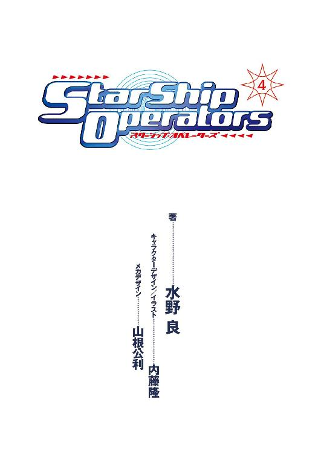
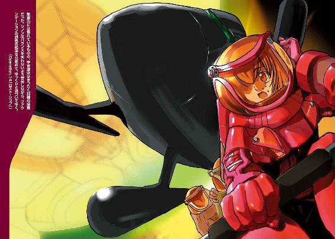
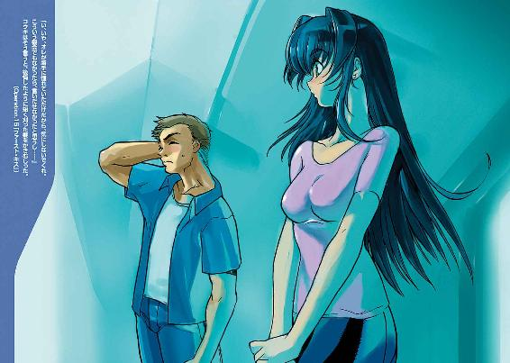
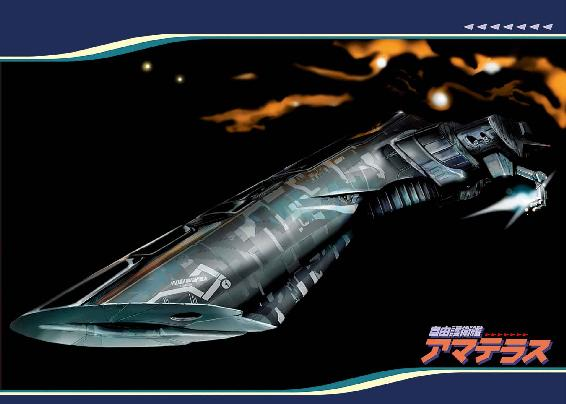
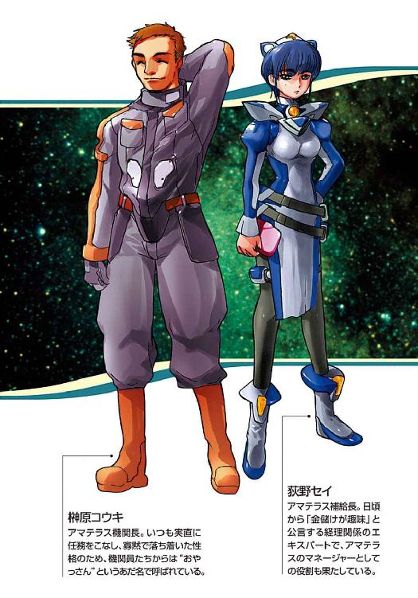
本書（電子版）に掲載されているコンテンツ（ソフトウェア／プログラム／データ／情報を含む）の著作権およびその他の権利は、すべて株式会社ＫＡＤＯＫＡＷＡおよび正当な権利を有する第三者に帰属しています。
法律の定めがある場合または権利者の明示的な承諾がある場合を除き、これらのコンテンツを複製・転載、改変・編集、翻案・翻訳、放送・出版、公衆送信（送信可能化を含む）・再配信、販売・頒布、貸与等に使用することはできません。
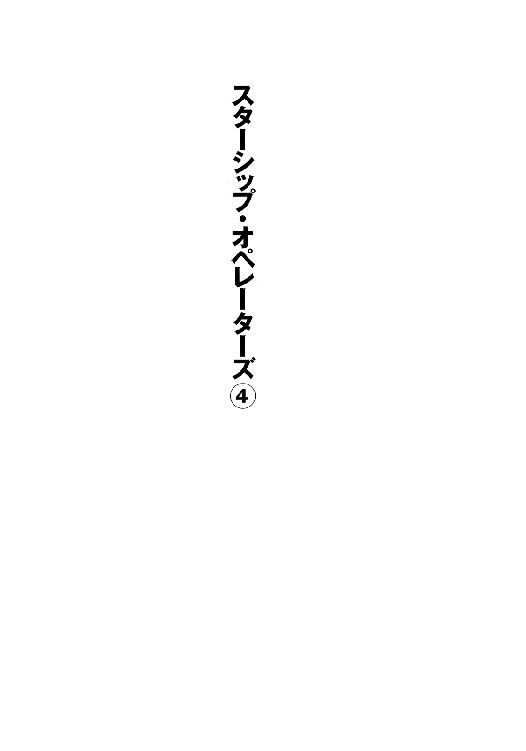
初出 スターシップ・オペレーターズオフィシャルサイト
URL:http://www.starshipoperators.com
電撃hp Vol.19, Vol.20（オペレーション13，15）
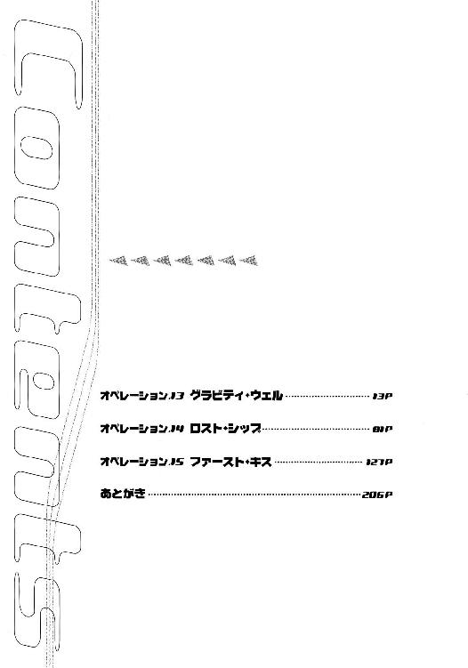
カバーデザイン◎荻窪裕司
編集◎フィールドワイ
キャラクターＣＧ◎内藤隆
メカＣＧ◎山根公利
オペレーション13 グラビティ・ウェル
１
二三〇〇年六月二三日 シュウ星系第四惑星軌道付近──
太陽系から銀河中心方向に向かって、およそ一五〇〇光年離れた場所に、散開星団ヘンリエッタは存在している。人類が到達したもっとも遠方の宇宙だ。
二〇〇〇あまりの星系からなり、人類はそこに三〇あまりの植民惑星を開拓していた。各植民惑星は植民の母体となった本国から独立した惑星国家を形成し、惑星の地球化を進めながら、資源を採掘し、産業を発達させている。
しかし今、ヘンリエッタ星域は戦争のまっただなかにある。
そしてそれは第二次世界大戦以降、数世紀ぶりの大規模戦争であり、人類が初めて経験する宇宙を舞台にした戦争でもあった──
自由護衛艦アマテラスは、シュウ星系から跳躍航法で離脱するため、恒星シュウの重力場の影響が少ない場所に向かって、一Ｇ加速と三Ｇ加速を繰り返している。
だが、その行く手には、〝ドラゴンフライ〟というコードネームを与えた敵艦が立ち塞がっていた。
そして後方からは二隻の戦闘艦──重装巡航艦コンキスタドールとコードネーム〝ヘッジホッグ〟の追撃を受けている。
「......アマテラスはまさに、絶体絶命の危機にあるわけです」
スーツ姿の金髪の女性が、深刻な表情を浮かべて、マイクに向かっている。
銀河ネットワークと契約しているフリー・アナウンサー、ディータ・ミルコフである。彼女が第一艦橋にあがってくるのは、久しぶりのことだった。
スターシップ・チャンネルの番組構成が変更になり、戦争をスポーツのように実況放送するという企画が中止になったからだ。
戦争の模様は完全にドラマ仕立てにされたものを娯楽サブチャンネルのほうで放映し、報道サブチャンネルのほうでは艦内映像もまじえたニュースやドキュメントとして配信されている。
本格的な宇宙戦争を収めた貴重な映像である。銀河ネットの他のチャンネルや地方の放送局、はては地球の国々や惑星国家の宇宙軍からも提供依頼が殺到している。
チャンネルのエグゼクティブ・プロデューサーであるピーター・スパイクスは、それらの依頼に制限つきではあるものの応じていて、今ではチャンネルの収入源として大きな割合をしめている。
チャンネルの契約者数や広告も順調に伸びていて、すくなくともチャンネル打ち切りの心配はなくなったようだ。
（わたしたちにとっては、戦いを続けなきゃいけないってことなんだけどね......）
第一艦橋で艦長補佐の任務にある香月シノンは、颯爽としたスーツ姿のディータを見つめながら、心のなかでつぶやいた。
覚悟はできているものの、今でもときどきヒステリーを起こしたくなる。
彼女は最初、この最新鋭の宇宙戦闘艦を買い取って、王国──ヘンリエッタ星域惑星国家同盟──と戦うという現実離れした計画に反対の立場を取っていたのだ。
それが今では王国から、首謀者のひとりに名指しされている。
もっとも、これまでの戦闘で作戦を立案してきたのは実質、彼女だから、王国の指名が間違っているとはいえない。
ほんの数日前にも〝ハンマーヘッド〟というコードネームをつけた敵艦を、策を弄して一対一の砲撃戦に持ち込み、撃沈している。
乗員の全員死亡が確認されたことや、正式な艦名が〝レイテ〟であったことなどが、昨日、王国の報道官から発表された。
王国宇宙軍所属の戦闘艦は、歴史上の海戦を艦名の由来としている。レイテというのは惑星国家キビの本国である日本が、第二次世界大戦において大敗北を喫した海戦なのだ。
「アマテラスは反転せず！」というタイトルでニュースを配信した歴史通の記者も日本国にはいたらしい。
ただし、コンキスタドールは、もともと王国所属の戦闘艦ではないので海戦の名前を由来とはしていない。大航海時代の「征服者」を意味するスペイン語からつけられた艦名である。コンキスタドールを所有していた惑星国家コルドバは、ヨーロッパ連合スペインが母国となって成立した惑星国家だからだ。
（惑星防衛が任務の戦闘艦なのに、そんな名前をつけたりするから......）
コンキスタドールは、コルドバに侵略戦争をしかけてきた王国に投降し、今では本物の征服者として王国宇宙軍に属している。
ヘンリエッタ星域自治連合に属する惑星国家の宇宙戦闘艦三隻を撃沈という王国のエースともいうべき戦闘艦なのだ。
だが、現状においてはコンキスタドールは、ヘッジホッグともども脅威ではない。最大加速で追撃を行っているものの、アマテラスに追いつくことは不可能だからだ。
戦うべき相手は、短距離跳躍を繰り返し、近接戦闘を挑んでくるコードネーム・ドラゴンフライ一隻である。
しかし──
（シェンロンは、ドラゴンフライによって実質、戦闘不能となった。そしてシェンロンと同じ弱点を、アマテラスは抱えている）
万能型の大型艦として建造されたアマテラスだが、それでも弱点はある。ひとつはステルス性能であり、もうひとつは旋回性能だ。
敵艦はアマテラスの至近距離に突如として出現する。そしてパルスレーザー近接防御兵器を乱射してくるのだ。
その掃射を受けると、艦の装甲は無事でも、観測装置や攻撃兵器など装甲の薄い部分には被害が出る。そうして、じわじわと戦闘力を奪われ、最終的にはパルスレーザーの熱ダメージが蓄積し、ゆっくりと熔けてゆく。
宇宙空間は絶対零度に限りなく近いが、熱を伝導する物質がないため、高温の物質が冷えるには熱放射しか手段がない。そのため、大気中よりも冷めにくいのである。
水に浮かぶ船にとっては浸水が沈没の原因であるため排水装置を備えている。一方、宇宙に浮かぶ船にとっては熱こそが一番の大敵なので、放熱装置が必要なわけである。
アマテラスは最新式の熱変換発光素子〝ホタル〟による放熱システムを採用しているが、それでも放熱量は無限ではない。パルスレーザーの照射を浴びつづければ、シュウ宇宙軍の戦闘艦シェンロンと同じ運命をたどることになる。
「なんとかしないとね！」
シノンは声に出してつぶやき、気合を入れるため両手で頰を叩く。
「シ、シノン！」
第一艦橋の同僚で幼なじみでもある秋里ミユリが、焦ったような表情をして、小声で呼びかけてきた。
何事だろうと艦橋内の状況を確かめると、ディータが艦長の神崎キスカにマイクを向けている光景が目に入った。
ふたりとも、困惑の表情だった。
それを見て、シノンは思いだした。
ディータが第一艦橋にやってきたのは、惑星国家シュウにおける一連の事件に関して、キスカにインタビューするためであることを。それも生放送である。おそらく、声をあげたとき、本番中だったのだろう。
シノンは真っ赤になった顔を伏せた。
「香月艦長補も仰っているとおり、進行方向に出現した敵艦を〝なんとか〟しないかぎり、この星系から脱出できませんよね？」
ディータが穏やかな笑みを浮かべながら、キスカに質問した。
（もしかして最悪のタイミングだったの？）
シノンのひとりごとは、ディータの質問にクリティカルに答えていたのだ。そして、その一言はキスカにとっては決め台詞となったはずだ。
「避けられない戦いですから」
キスカはこめかみのあたりをぴくつかせながらも、なんとか冷静に返答した。
「このあと、すぐに作戦会議を行います。敵艦と遭遇するまでに、有効な戦術を見つけだしますよ。そしてこれまでどおりに勝ちます。王国を打倒しないかぎり、母国キビや惑星国家シュウの解放もありえないのですから」
キスカはそう言うと、ひきつった笑顔を浮かべて、ディータに会釈した。
「ありがとうございました」
ディータがインタビューをしめくくる。
そして数秒をおいて、ふたりの視線がふたたびシノンに向けられた。
「も、申し訳ありませんでした」
シノンは座席から立ち上がって、身体をふたつ折りにするように頭を下げた。
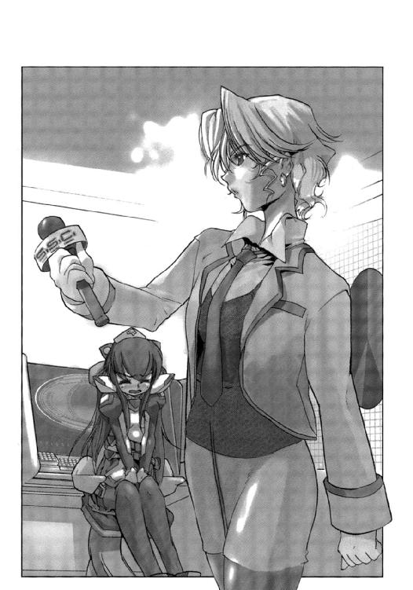
「謝ることなんかないさ。実際、作戦を考えているのはキミなんだから」
キスカは憮然とした表情で言うと、高性能の座席を蹴るように立ちあがった。
今は一Ｇで加速中なので、惑星キビの地上にいるときと同じように、床の上を歩くことができる。
「わざとじゃないんです......」
子供じみた言い訳だと思いつつ、シノンはキスカの背に声をかけた。
「三〇分後に、作戦会議をはじめるから」
キスカは振り返ることもなく不機嫌な声で言った。
今は第二級戦闘態勢で、第二艦橋と第三艦橋が当直に入っている。第一艦橋は、これから八時間の待機時間だ。
だが、状況が状況だけに、ゆっくりと休んではいられない。先ほどのインタビューではないが、ドラゴンフライに対する有効な戦術を考えないかぎり、この星系から脱出するどころではないのだ。
「シノンちゃ～ん、始末書ものよ～」
ディータが側に寄ってきて、小声でささやいた。
仕事中以外はのんびりとした女性だが、今はさすがに笑顔がない。
「わたしのほうの番組には、お笑いはもう必要ないしね」
そう言って、ディータはシノンの肩を二、三度叩いた。
「以後、気をつけます......」
シノンにはそう答えるしかなかった。
「お願いね」
ディータはようやく笑みを浮かべると、シノンに耳を寄せて、
「でも、言葉にしたんだから、なんとかしてね」
と、ささやきかけてきた。
アマテラスが沈めば、当然、彼女も運命を共にすることになる。他人事ではないのだ。
ディータは三人のオペレーターに手を振って、第一艦橋から去っていった。
「大恥かいちゃった......」
シノンは苦笑を浮かべて、ミユリを振り返った。
「シノンって、最近、自分の世界に入ること多いよね」
ミユリが呆れたという表情で言った。
「戦闘が続いているからね。それに、みんながシノンに期待しているから」
主任通信員である氷坂アレイが、ブルースでも口ずさんでいるような独特の声と口調で言った。
「キスカにもう一度、謝ってくるわ。すぐに作戦会議だしね......」
シノンは照れ笑いを浮かべながら、ふたりに背を向けて、第一艦橋を出た。
２
香月シノンは第一艦橋から、作戦室までの短い通路を小走りに移動した。
悪気はなかったが、言ってはならないことを言ったという自覚はある。今回ばかりは、全面的に自分が悪い。
最終的な作戦を考えているのが自分なのは間違いないが、その過程においてはキスカも協力してくれている。とくに先日の勝利は、敵艦隊の作戦をキスカが正確に推測したからこそといえる。
そして彼は、ほとんど不眠不休で模擬戦の調整を行ってくれた。
キスカが頑張っていることはシノンも認めているのだが、彼の言動はとかく癇にさわることが多く、素直に評価できないのである。
（でも、これまでのことも一緒に、謝っておこう）
シノンは心のなかでつぶやくと、失礼しますと声をあげて、作戦室のドアを開ける。
そして信じられない光景を目にしてしまった。
神崎キスカと間宮リオが抱き合って、唇を重ねていたのである。
「ええっ！ あっ、失礼しました！」
一瞬、硬直したあと、シノンはあわてて言って、ふたたびドアを閉めた。
そして扉に背を向けて、手で胸を押さえる。
心臓が激しく脈打っているのが、はっきりと伝わってきた。
（なんで、キスカとリオが？）
シノンは心のなかで自問する。
仲がいいとは思っていたが、そこまで関係が進んでいるとは思いもしなかったのだ。
と、ドアが開いて、リオが顔を覗かせた。
「......いいから入って」
リオはアマテラスの報道官として公式声明を発表しているときと同じ顔をしていた。
「ご、ごめんなさい」
「謝らなくてけっこう。でも、他言は無用よ」
リオは小声でささやきかけてきた。
シノンは居心地の悪さを感じながらも、首を縦に振る。
（今日はとことん運勢が悪いのかも......）
第三艦橋勤務の副航宙士である摩耶アキホなら、いろいろな占いを知っているから、ラッキーアイテムだのラッキーカラーだのといったアドバイスをくれるかもしれない。もっとも、このアマテラスのなかで、それらが手に入るかどうかは問題だが......
「先ほどは、そして今もですが、すいませんでした！」
シノンは大声で言って、またも身体をふたつに折るように頭を下げる。毎日、ストレッチは欠かしていないので、額が膝に当たりそうになる。
「作戦会議は三〇分後だって言ったじゃないか。それからドアを開けるときは、ノックぐらいしてくれないか？」
キスカは憮然として言った。
「艦長......」
キスカの隣の席に腰をおろし、リオが彼を睨みつける。
「会議の三〇分前にわたくしを呼び出して、ドアにロックもかけず、キスを迫ってきたのは、いったいどなたですの？」
リオはキスカにだけ聞こえるように小声でささやいた。
「それはそうだが......」
リオの静かな迫力に押されて、キスカは言葉を詰まらせる。
「そんなことより、タカイとシントのふたりも呼んで、さっさと会議をはじめましょう。アマテラスをシェンロンと同じ運命にしたくないのならね」
リオの言葉に、キスカは渋々といった様子でうなずくと、自ら通信装置を操作してふたりの副艦長に会議の時間を早めることを伝えた。
そして一〇分後には桐生タカイと三上シントのふたりが一緒に姿を現し、作戦会議がはじまった。
一昨日と昨日も作戦会議を開いているが、敵艦の情報分析に終始している。より正確に言えば、対策がまったく思いつかなかったのだ。
敵艦が至近距離に跳躍し、攻撃を仕掛けてくる時間は正確に一〇秒。そのあいだにアマテラスを旋回させ、レーザーキャノンの照準をつけ、発射するのは不可能だという結論になっている。
アマテラスが装備しているパルスレーザー近接防御兵器は、浮遊物や魚雷の破壊を目的としており、出力は高くないし、数も必要最小限しか装備していない。
浮遊物が多い場合や、魚雷が多数、接近しているような状況では、浮遊式のパルスレーザーユニットを周囲に展開することもあるが、艦が加速している状況では、それも無理だ。
「プラズマキャノンやレーザーキャノンで攻撃する余裕はありませんし、パルスレーザーで撃ちあっても勝ち目はありません......」
艦長補佐という立場から、会議の司会役を務めているシノンが、これまでの二回の会議の結論をまとめた。
「つまり、処置なしってことだね」
シントが苦笑まじりに言った。
「出現場所を予測して、魚雷を撃ってみるっていうのはどうだろう？」
キスカが提案してみた。
「出現場所の予測は、難しいんじゃないか。敵艦が出現しているあいだの一〇秒間で追尾し、直撃させられるとは思えない」
タカイが腕組みしながら言った。
「すこしでも確率があるなら、試してみるべきじゃないか？」
キスカが心外だという表情をして、タカイに反論する。
「最後の手段としては有効だと思います。しかし今の段階では、もっと有効な対抗策を探すべきでしょう」
シノンが営業用の笑顔を浮かべて、キスカを諭すように言った。
「そういうキミには、なにか考えがあるのか？」
「カスミとイカスミは、防御手段として有効だと思っています。パルスレーザーの直撃数と破壊力を減らすことができますから」
〝カスミ〟は高純度の銀でできた薄片で、レーザーを反射させ、アマテラスへの直撃を防ぐことができる。
〝イカスミ〟のほうは、電磁波を吸収する物質を吸着させた繊維で、艦の周囲に雲状に展開させる。この雲のなかを通ったレーザーは、エネルギーを奪われることになるのだ。
その有効性はフェニキア星系での戦いで証明されている。レーザー兵器の破壊力を、半減させることができる。
「守っているだけでは、敵を倒せないじゃないか？ それにカスミとイカスミだって、完全じゃない。せいぜい時間稼ぎにしかならない」
キスカが指摘する。
「そのとおりです。守っているだけでは、勝てません」
シノンは素直に認めた。
「敵のエネルギー切れを期待しているの？」
リオが訊ねてくる。
「期待はしてるけど......」
シノンはリオに力無く微笑みかえす。
「跳躍航法に必要なエネルギーは莫大なものだもの。ジェネレーターをいくつ積んでいるかは知らないけれど、無限に跳べるはずがない。でも、敵があと何回の跳躍に耐えうるかは不明でしょ。不確定な要素に艦の運命は賭けられないから......」
「提督としては、一〇〇パーセント勝てる戦術を考えたいってか？」
タカイがニヤニヤと笑う。
「わたしは、提督じゃありません！」
シノンが血相を変えて抗議をする。
アマテラスの乗員から〝提督〟というあだ名で呼ばれはじめているのは知っているが、艦長であるキスカを刺激するようなことは言わないでほしいと思う。
（まったくデリカシーがないんだから......）
タカイ本人には悪意がないだけに、余計に始末が悪い。
当然のように、キスカは不機嫌な顔になる。
そんな彼をリオが、テーブルの下でつつくのが、キスカの隣に座っているシノンには見えた。
それを見て、シノンは顔が熱くなるのを覚える。
（まるで普通の恋人みたい......）
シノンには恋愛経験というものがないので、どう反応していいかもわからない。
ただ正直な感想を言えば、キスカにリオはもったいないと思う。
彼女は人形のように愛らしい顔をしているが、身長はあるし、足もすらりと長い。それでいて、胸や腰は豊かなのだ。
スターシップ・チャンネルでの人気も高いと聞いている。
（ふたりの関係は、どこまで進んでいるのかな？）
不謹慎だとは思うが、どうしようもなく興味を覚える。
（でも、敵艦とどう戦うかじゃなく、こういうことで悩んでいるほうが普通なのよね......）
数カ月前まで、自分たちは大学生だったのである。
しかし、今は恋愛より生き残ることが最優先だ。
シノンは考えを切り替えて、テーブルにシュウ星系の立体図を表示させた。
そしてそこにアマテラスと敵艦の現在地を重ねる。
シノンが描いたイラストが、現在地を表すアイコンとして使われている。ドラゴンフライはトンボ、アマテラスは女神のイラストである。そしてヘッジホッグはハリネズミ、コンキスタドールは剣を手にした大航海時代の軍人のイラストだ。
シェンロンを示すドラゴンとレイテを示すハンマーヘッド──シュモクザメのアイコンは、星系図にはもはや存在していない。
シノンはその星系図を見つめながら、シェンロンから転送されてきた戦闘映像を思い浮かべた。おかげで、こうして対策を練ることができる。何の準備もなく戦っていたら、間違いなく沈められていただろう。
「ドラゴンフライを迎撃するには、専用の兵器が必要かもしれませんね......」
シノンは言って、ただの感想ですが、と付け加えた。
「やっぱり、処置なしってこと？」
シントがふたたび苦笑を洩らす。
「今回の戦闘には役立ちませんが、王国が同型の戦闘艦を建造する可能性もありますから、ＡＧＩに提言しておきましょう」
シノンは、弁解するように答えた。
万能型の戦闘艦であるシェンロンが手も足も出せなかったのだから、ドラゴンフライの戦闘艦としての有効性はすでに実証されている。
宇宙での戦闘は、実戦例があまりにも少ない。戦術も変わってゆくだろうし、戦闘艦や兵器の性能も進歩してゆくことだろう。あるいは、ドラゴンフライのような特殊な戦闘艦が、次世代の宇宙戦争の主役かもしれない。
それから、作戦室を重い沈黙が支配した。
誰も、効果的な対応策を提案できなかったためである。
（今のアマテラスでは、この戦闘艦には勝てない）
シノンは様々な可能性を考えたあと、冷静にそう判断した。しかし、この艦の命運が完全に尽きたことを意味しているわけではない。
「逃げるしかないかもしれませんね......」
そしてシノンは、ぽつりと言った。
「逃げるって、どこへどうやってだよ」
キスカがすねたような声で言う。
「こっちだって、跳躍はできるじゃありませんか」
「こんな場所から、可能なのか？」
キスカが身を乗り出して言う。
「理論的には可能です。敵艦だって、跳んでいるんですから」
「恒星シュウの質量の影響が大きすぎないか？ ワープミスの可能性も......」
キスカは不安を隠しきれない様子だった。
「でも、撃破できないなら、それしかないかもしれないね。最後の手段として、取っておいてもいいんじゃないかな......」
シントが普段どおりの穏やかな声で言った。
「まさに最後の手段だな」
タカイが苦笑を洩らす。
リオがため息まじりにうなずく。
「......結城科学士官に相談してみます」
シノンの言葉に、残る全員が相槌を打つ。
科学士官である結城シメイは、まだ一五歳でしかないが、数学と物理学の巨人である。人工脳制御室に常時つめていて、ＡＥＳＯＰ──光素子人工脳──の相手をしている。
重力傾斜の強い場所からの跳躍ということになると、もはや人知の及ぶところではない。跳躍推進機関の精度と、人工脳の計算能力だけが頼りなのだ。
しかし、いかに性能の優れた人工脳でも、一〇〇パーセント正確な計算はできない。惑星シュウの重力場の影響が強いし、この星系の第五、第六惑星は木星型のガス・ジャイアントであり、その重力場も無視できない。多重振り子の振る舞いと同じで、正確な予測はできないのだ。
（どこに跳躍するかは、混沌のみが知っているってことね......）
シノンは心のなかでつぶやく。
しかし確実な死よりも、それは遙かにましなのだ。
３
重装巡航艦コンキスタドールの艦橋では、王国の報道官であり、シュウ星系における宇宙海戦の作戦司令でもあるハンス・ゲオルグ・ヘルマンが、蒼白な顔をして座席にかけていた。
先刻、同盟宇宙軍最高会議議長であるオーギュスト・ペリエから直々の連絡があったのだ。アマテラスを沈められなかったときには作戦は成功とはいえず、その責任はすべて作戦司令のヘルマンにあるとの通告があったのである。
ヘルマンは高速攻撃艦マリアナ艦長ルイス・ベルモントの判断ミスこそが装甲砲撃艦レイテ沈没の要因であると抗弁したのだが、ペリエは耳を貸さなかった。
通信が終わるや否や、ヘルマンは高機動突撃艦リサにアマテラスの攻撃を命じた。
そしてリサはアマテラスの進行方向に跳躍し、アマテラスの接近を待っている。
（名誉挽回の機会を与えるなど、国王陛下もこの演説屋には甘いな）
コンキスタドール艦長であるデュール・エルロイは、嘲笑を浮かべる。
（だが、今回ばかりはアマテラスに勝ち目はあるまい）
高機動突撃艦リサは、コンキスタドールを相手にした模擬戦で無敗を誇っている。そして、ヘンリエッタ星域自治連合に加盟している惑星国家が所有する戦闘艦は、コンキスタドールと同じタイプの万能型の戦闘艦がほとんどなのである。
実戦投入されたのは今回が最初だが、惑星国家シュウの戦闘艦シェンロンを戦闘不能にするという戦果をあげている。
（それにしても、演説屋やら技術屋やらが、作戦司令や艦長になるようではな）
王国もそろそろ終わりかもしれないと、エルロイは思う。
リサ艦長ハルラール・ナジャは本来、技術士官であり、戦闘艦に搭載される人工脳のソフト開発の責任者であった。
彼がリサの艦長に就任したのは、この艦の建造を提案し、採用されたからである。
その高機動突撃艦リサだが、戦闘艦というより、全自動の兵器システムであり、本体から切り離され、攻撃を行う突撃艇にはひとりの乗員もいない。
突撃艇はスパルタ本星にある同盟宇宙軍の人工脳施設と量子共鳴通信による専用回線で結ばれ自動制御されている。当然、リサの司令艇と人工脳施設とも回線で結ばれているから、突撃艇に命令を与えることはできる。
もしも突撃艇が沈められても、人的損害はないし、突撃艇だけを新たに建造すれば、ふたたび戦列に復帰できるという利点がある。
しかし突撃艇だけでも、普通の戦闘艦を建造できるだけの費用がかかるのだ。戦闘艦本体や人工脳施設を含めれば、ゆうに三隻の戦闘艦を建造できる。
短距離跳躍を連続して行うためのエンジンやジェネレーターが、特殊な仕様のもので極めて高価だからだ。
しかも突撃艇はスペースのほとんどをそのために割いており、あとはパルスレーザー近接防御兵器や姿勢制御用のスラスター、そして必要最低限の観測装置しか積んでいない。
単機能に特化している戦闘艦が多い同盟宇宙軍のなかにあっても、もっとも特殊な戦闘艦といえる。
（敵艦によっては、まったく使い物にならなくなる可能性もあるだろうな）
エルロイはそう判断している。
艦の全面に追加装甲を施し、近接防御兵器を強化すれば、リサの攻撃艇など簡単に撃退できるはずなのだ。
だが、現状のアマテラスには、そんな用意はない。
リサとの模擬戦において、コンキスタドールがそうであったように、手も足も出せずに戦闘不能になることだろう。
（それとも、今回も奇跡を演じてくれるのかな）
たった一隻で、王国を翻弄しているアマテラスに対し、エルロイは敬意も抱いているし、応援したいという気持ちもある。
しかし、あの新鋭艦と真っ向から戦ってみたいという衝動も覚えはじめていた。
（オレも軍人ということだな）
エルロイは苦笑を洩らした。
（その機会が永遠に失われないためにも......）
エルロイはアマテラスの勝利をひそかに願うことにした。
４
香月シノンは間宮リオとふたりだけで、人工脳制御室に向かっていた。
ふたりの副艦長はそれぞれの艦橋へと戻り、艦長はデスクワークがあるからと言って、逃げるように自室へ帰った。
シノンはひとりでもいいと言ったのだが、リオは同行してくれたのだ。
そして今、ふたりは艦内の通路を歩いている。
あと一時間は一Ｇ加速を続けるので、普段とは異なり、普通に歩いてゆける。さっきのことがあるので、シノンはリオに何と声をかけていいのかわからなかった。
彼女のほうも無言である。
「......ワープアウトする先を、決めておかないといけないかもね」
沈黙に耐えられず、口を開いたのはシノンだった。
「ミスワープの可能性が高いのに？」
リオが顔をしかめながら訊ねかえしてきた。
「それはそうなんだけど、いちおうは目的地がないと......」
「シュウ政府のことがあるから、惑星国家のある星系には跳んでも受け入れられるわけないしね。それより大事なのは、ＡＧＩに補給艦の派遣準備を要求することじゃないかしら」
「たしかにね......」
リオの言葉に、シノンは相槌を打った。
彼女はいつものように冷静だった。
「わたしのほうから、荻野さんにお願いしておくわ」
リオが言って、今は第三艦橋が当直だしね、と付け加えた。
補給長の荻野セイは、ＡＧＩ──アリマ・ジェネラル・インダストリ──との交渉役としては、最適の人材である。
ＡＧＩはアマテラスの活躍で、企業の評価や業績、そして株価も急上昇している。最近、アマテラスのサポート態勢を確立するため、専門チームも組織した。
「自力で脱出できる場所に跳躍してほしいな」
シノンは苦笑まじりにつぶやいた。
最悪でも、補給艦が到達できる場所にワープしないと、アマテラスはおしまいである。食糧はたっぷりあるが、エネルギーのほうが先になくなり、生命維持装置が停止するからだ。
凍死するか、酸素がつきて窒息死するかのいずれかということになる。
（いずれにせよ、ぞっとしない死に方だわ）
シノンは身震いした。
そのとき、何を思ったか、リオがシノンに腕をからませてきた。
そして、
「わたしは政治的信条のためなら、命をかけてもいいと思っていた。それが政治家というものだから......」
と、ささやくように言った。
「それが、間宮のお家の教育なんでしょ？」
シノンが訊ねると、リオはゆっくりと首を縦に振った。
「日本本国の虚無政治時代、政治家には、理念も信条も誇りもなかった。ただ、日本という国を食い物にする技術に長けていただけ。当然のように、日本の経済は破綻した。でも、日本を食い物にした政治家たちの多くは、責任を取ることもなかったわ。日本各地で暴動が起こり、何千人もの死者が出た。その日本を再生させたのが、わたしのご先祖──〝サムライ〟間宮利隆よ。改革というより革命のような政策を断行し、在任二〇年で経済を復興させた。退任してすぐに虚無政治時代の亡霊というべき連中に暗殺されたけど、おかげで間宮利隆の理念は日本の政治的伝統となったわ......」
シノンは無言でうなずいた。
近代史の授業でも習ったし、様々なメディアで作品化されてきた。日本と日本を本国とする五つの惑星国家の国民で、間宮利隆の名前とその業績を知らない者はいない。
しかしリオがなぜ、いきなりそんな話を持ち出してきたのか、意図はわからなかった。
「伯父様には子供がいないから、わたしが跡を継ごうと思った。日本本国にある間宮の本家は最近、たいした人材を政界に送りこんでいないしね......」
リオは寂しそうに笑って、
「でも、わたしには無理かもしれない」
と、続けた。
「そんなことない......」
シノンはあわてて言った。
しかし、リオは静かに首を横に振る。
「知識も技術もあるつもりだったけど、覚悟が足りないみたい。自分でも意外だったけどね。だから伯父様に甘えたり、キスカに頼ったり、ね」
「本音でごめんなんだけど、どうしてキスカなの？ 彼にも覚悟があるようには見えないんだけど......」
「だからよ。覚悟のないもの同士が、身を寄せ合っているの。覚悟のある人に頼ったりしたら自分が惨めでしょ」
リオは言って、一瞬、すねたような顔をして、シノンの腕を離した。そういう表情は、まさに人形のような可愛さがある。
「そんなこと言わないでよ。わたしは、リオに頼っているんだから。それに、アマテラスを買い取ったのは、リオの発案でしょ。伯父様......間宮元総理と相談したんじゃないの？」
「それは、違うわ」
リオはまっすぐにシノンに向き直ると、静かに答えた。
「違うって？」
その答えに、シノンは自分の耳を疑う。
「それじゃあ、本当にキスカが考えだしたの？ 彼にできる発想とは、とても思えないんだけど......」
「彼だって秀才なのよ。シノンとはタイプが違うけど......」
リオはわずかに不満そうな表情を見せた。キスカとの関係は、シノンも知ったわけだから、もうすこし言葉を選んでほしいと思う。
「秀才なのは認めてる。でも、彼の発想って、ほら、その、保守的だから......」
「残念ながら、そのとおりよ」
リオはため息まじりに相槌を打った。
「今度の計画を立てたのは、キスカじゃないわ」
「だったら、いったい誰なの？ まさか荻野さん？」
シノンの言葉に、リオはゆっくりと首を横に振った。
「シノンには知っておいてもらいたいの。本人の希望で、みんなには秘密にしておいてほしいんだけど......」
「もったいぶらないで教えてよ」
シノンは思わずリオの肩をつかんで、催促するようにゆすった。
「これから、会いにゆく人よ。結城シメイ科学士官。彼こそが、すべてを計画した人物なの」
リオの答に、シノンは言葉を失った。
それほど、彼女にとっては意外な人物だったのだ。
結城シメイは、たしかに数学と物理学の天才だが、わずか一五歳である。政治や経済に、精通しているとは思えない。
それに、そこまでして王国と戦おうとする動機が、彼にあるのだろうか。
「信じられないわ......」
シノンは呻くような声で言った。
「でも、それが真実よ。わたしとキスカ、そしてセイの三人は、彼の計画に乗っただけ。そして今のところ、あの人の計画どおりに動いている。まるで予言か何かに導かれるみたいにね」
リオの言葉に、シノンはもう一度、首を横に振った。否定しても、事実は変わらないと知りながらも......
「シメイさんは、いったい何が目的で......」
シノンは自問するようにつぶやいた。
「単純に王国を打倒したいと思っているのかな？」
「それは、わからないわ。でも、他に何か理由があるとしても、彼とわたしたちの目的は一致しているはずよ」
「そうじゃないと困る」
シノンはだだをこねる子供のような声をあげた。
彼女はこれまで、自分たちの意志で王国と戦っているのだと思っていた。
（でも、何か別の意志が働いているのだとしたら。わたしたちは、それに踊らされているだけだとしたら......）
おもしろくない、とシノンは正直に思った。真実を知らずに戦いたくはない、と......
（シメイさんに会ったら、訊ねてみよう）
シノンはそう心に決めた。
５
人工脳制御室は、気のせいかひんやりとしていた。
光素子人工脳本体が、液体ヘリウムで冷却されているという先入観があるせいかもしれない。
「ようこそ」
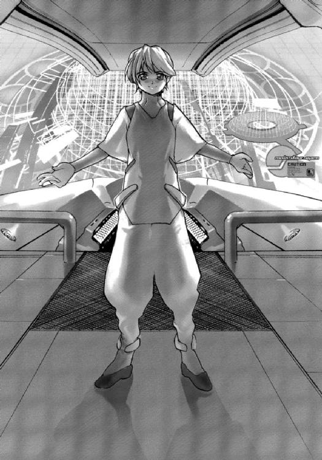
無邪気な笑顔を浮かべ、科学士官である結城シメイは両手を広げて、香月シノンと間宮リオのふたりを出迎えた。
そうしていると、年齢より二つ三つ幼く見える。
（こんな少年が......）
シノンは心のなかでつぶやいた。
王国との戦闘に、自分たちを駆りたてたというのだ。リオが噓を言っているとは思っていないが、正直、まだ信じられない気持ちだった。
「それで、ボクにいったいどんな用？」
「第五惑星軌道付近から跳躍航法を行いたいと思います。コードネーム・ドラゴンフライには対処できませんので......」
「なるほどね」
シノンの言葉に、シメイは驚いた様子もなく相槌を打った。
「結論から言わせてもらうと、やめたほうがいいよ」
シメイは言って、立ったまま制御盤を叩き、モニターにシュウ星系の星系図を表示させる。
シノンとリオは、彼の背後からそれを覗きこむ。
「この星系図に、重力場を重ねてみる......」
シメイが説明し、さらにコンソールを操作する。
しばらくすると、天気図の等圧線のようなものが表示された。恒星や惑星がまるで大小の台風の中心のようになる。そしてその等圧線が重なりあう部分は、ひどく複雑な模様になっていた。
「跳躍航法を行うとき、なぜ星系外縁まで移動する必要があるかの答が、これだよ」
シメイはさらに操作を続け、重力場を二次元に変換し、グラフィック処理する。
そして完成したのは、薄いゴムの幕の上に大小のボールを置いたように漏斗状のくぼみがいくつもできている図形だった。
「これが〝重力の井戸〟さ。キミたちはここで、トランポリンをしたいと思う？」
シメイが問いかけると、シノンとリオはそろって首を横に振った。
「どこに跳ねるか、想像もつかないだろ？ 実は、ワープする距離は、消費するエネルギーにかならずしも比例しないんだ。ワームホールを作るための最小限のエネルギーは必要だけど、あとは何百光年跳ぼうと、たいして変化しない。ただ、出現先を限定するためには、エネルギーが必要になる。だから、長距離を正確に跳ぼうとすれば、大きなエネルギーが必要になるんだ。でも、ランダムに跳ぶだけなら、どれほど長距離を跳ぼうと、たいしたエネルギーは必要ない。これがミスワープの恐ろしいところなんだ。たとえば、アンドロメダ銀河に出現するなんてことがあっても、ボクは驚かないね」
「アンドロメダ銀河......」
シメイの言葉に、シノンは呆然となった。
Ｍ31アンドロメダ銀河は、シノンたちがいるこの銀河系に、もっとも近い大型銀河だ。しかし、それでも二五〇万光年の距離を隔てている。
「でも、敵艦は重力の井戸のなかからワープを行っています」
シノンはなおも反論してみたが、その声にはもう力はなかった。
「おそろしく無駄な努力をしてるんだと思うよ。それでも、いつかミスワープを起こして、消滅するはずさ」
「いつかじゃ、ダメなんです。アマテラスが沈められるより先に、ドラゴンフライには消滅してもらわないと......」
シノンはすがるような目で、シメイを見つめた。
「さっき、リオからこのアマテラスを買い取って王国と戦うという計画を立案したのは、あなただって聞きました。それは勝算があってのことではないんですか？」
「勝算はあったよ。国連宇宙軍が艦隊を派遣してくれたらいいだけなんだから。でも、なかなか動いてくれないね」
シメイはそう言って、首を傾げてみせる。
「それだけなんですか？」
科学士官からの返答に、シノンはひどいショックを受けた。
「それだけだよ。いくら最新鋭の戦闘艦とはいえ、一隻だけで王国の全艦隊を沈められるはずはないからね」
「それぐらい、わかっています！」
シノンはつい声を荒くした。
彼女が問いたかったのは、国連宇宙軍が艦隊を派遣してくれることにたいする勝算である。ただの希望だけで、計画を立てたのだとしたら、あまりにも無謀ではないか。
シノンの迫力に圧されたように、シメイはびくりとなる。
「ボクは可能性を提示しただけだよ。神崎候補生や間宮候補生は、その可能性にかけてみたいって言ってくれたんだ。最初のあいだ、予想したとおりに事が進んでくれたから、ボク自身が驚いたぐらいだよ」
「それについては、結城科学士官の言うとおりよ。彼が提案した計画にかけてみようと思ったのは、わたしやキスカ。経済通のセイに相談してみたら、銀河ネットには野心的なプロデューサーがいくらでもいるから、のってくるかもしれないって答えてくれてね」
リオがシノンをなだめるように、肩に手をかける。
「申し訳ありませんでした......」
シノンはシメイに素直に謝った。
誰が計画を発案したかは、今となっては関係ない。その計画に賛同した人間全員に責任があるということは、シノンにもわかっている。
「沈められるのが確実というなら、ワープするしかないというのは自明だものね。跳躍航法用プログラムのパラメーターをふやして、できるかぎり正確にワープできるよう努力してみるよ。でも、敵がショートワープしてから五秒間は絶対にワープしないでほしいな。それでなくても複雑な計算なのに、ワープによって生じる重力波が影響したら、お手上げだからね」
「覚えておきます......」
シノンはうなだれるようにうなずいた。
星系内からのワープが危険を伴うことは知っていたが、宇宙のどこかには出現するわけだから、ミスワープすることをさほど深刻には考えていなかった。
だが、銀河系の外に跳ぶ可能性まであるとなると、話はまるで異なる。
「まさに、最後の手段ね」
リオがため息まじりにつぶやいて、シノンを見つめた。
「他に有効な手段はないか、ぎりぎりまで検討してみるけど......」
正直、今度ばかりは期待しないでほしいと、シノンは思った。
（誰かと身を寄せあったりしたら、心が落ち着くのかな......）
アマテラスに乗っている男子たちの顔を、シノンは思い浮かべてみる。
だが、どうにもピンとこない。
（こんなときに、お父ちゃんがいてくれたら......）
思いっきり八つ当たりできたのに、と思う。
それだけで、気分が落ち着いただろう。もちろん、悪いことだという自覚はあるから、一時間後には「さっきはごめん」と謝ることになるのだが......
（でも、もう会えないだろうな）
このままでは、戦死するか、宇宙の彼方に消え去るかのいずれかなのだ。
そして、もし生き残れても、戦いはまだまだ続くのである。
６
コードネーム・ドラゴンフライが、突如、アマテラスの至近距離に跳躍してきたのは、シュウ星系第四惑星と第五惑星のちょうど中間あたりにさしかかったときであった。
そして敵艦はパルスレーザーのシャワーを浴びせてきた。
「応射願います」
第二艦橋で副砲術士を務める若菜サンリは、近接防御管制員である七瀬ユキノを振り返った。
「スタンバってはいたけど、照準が間に合わないぜ！」
ユキノは悲鳴をあげた。
「まぐれ当たりということだってあるからな。とにかく、撃つだけ撃ってみろよ」
砲術長であり副艦長のひとりでもある桐生タカイが、ユキノに声をかける。
そして第三艦橋の航宙長にしてもうひとりの副艦長である三上シントに通信を入れた。
「どうだ？ 艦首を敵艦に向けられそうか」
「──無理だね」
シントから、あっさりとした答が返ってきた。
艦首が敵艦に向かないのなら、四六〇〇口径プラズマキャノンも、暴露部に装備した〝リボルバー〟五連装レーザーキャノンも使いようがない。
「偶然、敵が進行方向に跳んでくれるのを待つしかないか......」
タカイはため息をついた。
「この戦いで、オレの出番はなさそうだな」
ドラゴンフライは正確に一〇秒間、攻撃を行ったあと、ふたたび短距離跳躍を行い、射程圏外へと退避した。
「カスミ、イカスミ、発射するよ」
遠距離防御管制員の神谷イマリが言う。
「許可する」
タカイはうなずく。
第一艦橋は今、待機時間にある。第一級戦闘態勢を発令したので、まもなく配置に着くはずだが、それまでは先日の会議で決まった作戦計画に従って行動するしかない。
電磁波反射薄片カスミと電磁波高吸収繊維イカスミの雲をつくり、身を隠すのだ。
アマテラスのミサイル発射口が開き、数発のミサイルがゆっくりとした速度で進行方向に進む。そして小さな閃光とともに、弾頭が開いた。
銀色と暗黒の雲が広がり、アマテラスはその雲のなかへとその巨体を突入させた。
「被害状況は？」
タカイはサンリを振り返って訊ねた。
「敵艦のパルスレーザーが、かなりの弾数命中したようです。艦体の何カ所かで、温度が上昇していますし、外部機器にも損傷が出た模様です」
サンリが落ち着いた声で答えた。
「そのまま被害状況を監視しつづけてくれ」
「了解しました」
タカイの指示に対して、サンリが笑顔でうなずいた。
「カスミとイカスミの雲のなかに入ったら、こっちからも攻撃できないぜ！」
ユキノが不満の声をあげる。
「こっちのパルスレーザーは、命中したか？」
「何発かは当たったと思う」
タカイの質問に、ユキノが憮然となる。
正確な照準をつけている暇もないので、タカイに言われたとおり、全自動で攻撃を行った。それでも、敵が退避するまでに、何万発ものレーザーを発射したわけだから、何発かは命中したに違いない。
「効果的な被害を与えたとは思えないけどさ」
「なら、雲隠れしていたほうがましだな」
タカイは苦笑を洩らす。
「イマリ、敵が次にワープしてくるタイミングに合わせて、五発ばかり魚雷を発射しておいてくれ」
「目標は？」
イマリがえっというような顔をする。
「まかせる。神崎の顔も立てておいてやらないとな」
魚雷による攻撃を提案したのは、アマテラス艦長、神崎キスカなのだ。
「あいつのメンツなんかに、何百億円もかける必要あるの？」
「香月からも頼まれているんだ。成功の望みがどんなに低くても、試せることはなんでも試しておいてくれってな」
「シノンが、ね」
それじゃあしかたないというように、イマリは首を縦に振った。
「前後左右と上下に一発ずつ発射しとくよ」
イマリが言って、魚雷にプログラムをロードし、発射のカウントダウンをはじめる。
そしてゼロがカウントされ、ミサイル発射口から続けざまに六発の魚雷が放たれた。
魚雷は光の航跡をひいて、しばらくのあいだ加速をする。そして初期加速を終えると、宇宙の闇のなかに完全に姿を消した。
アマテラスの観測装置をフルに稼動させなければ、魚雷の発見は決して簡単ではない。
しかし、敵艦がよほど都合のいい場所に出現してくれないかぎり、魚雷が敵艦を追尾する余裕はない。しかも敵艦が乱射しているパルスレーザーで、命中するまえに破壊される可能性が高い。
敵艦撃破の確率は、かぎりなくゼロに近いはずだ。
（それでも試してくれとはな）
タカイは副艦長席で、深く腕組みをする。
（さしもの香月も、今回ばかりはお手上げってことか）
７
「遅くなりました......」
香月シノンが焦った声で言って、第一艦橋の自分の座席に腰を押しつけた。
第一級戦闘態勢を告げる警報を聞いて、シノンはすぐに目を覚まして駆けつけたのである。
だが、あわてていたので、メイクをしてくるのを忘れていた。
すかさず通信制御室に詰めているディータ・ミルコフからクレームが入って、シノンは第一艦橋の隣にある化粧室に入って、無重力下でメイクをするはめになった。
それで一〇分ほど、時間をロスしてしまったのである。
この艦の乗員は軍人であると同時に、タレントでもあるということだ。そして演じているのは、戦争という名のドラマ。
シノンはシートベルトをつけて、制御盤に自分のＩＤカードを差し込み、一二桁の暗証コードを入力する。
モニターに初期画面が起動されるのを確認してから、シノンは艦長の神崎キスカを振り返った。
「戦況はいかがですか？」
「はっきり言って、最悪だ。発射した魚雷は、神出鬼没の怪盗に振り回される警官みたいに右往左往するだけだし、敵艦の攻撃によるダメージも徐々にだが、深刻なものになってきている」
「そうですか......」
キスカの言葉に、シノンの表情が翳った。
「〝南十字〟も、第三望遠鏡が壊されちゃったの。装甲で、蓋しておいてほしかったのに～」
主任観測員の秋里ミユリがそう言って、涙を滲ませる。
「パルスレーザーユニットもすでに二機が破壊されている。他にも様々な船外機器が機能を停止しているね」
主任通信員の氷坂アレイが、独特の声と口調で言った。
「確実に、シェンロンと同じ運命をたどっているということね」
シノンはため息をついた。
「船体の温度は？」
「順調に上昇中だ。船殻のあちらこちらに溶融スポットが生じている」
キスカが不機嫌に答えた。
シノンとしては彼に答えてもらいたかったわけではないのだが、彼のほうはきっと言わずにおれなかったのだろう。
追加装甲であるスカラベ多機能装甲板が貼りつけられていない場所は、熱伝導効率が悪い。そのため、パルスレーザーの熱衝撃によって、船体表面が部分的に熔けているということだ。
「そしてドラゴンフライの跳躍推進機関はオーバーヒートもしていないし、ミスワープも起こしていないわけね......」
シノンは親指を唇に当てながらモニターを見つめ、被害の状況を確認する。
カスミとイカスミのおかげで、被害が軽減されているのは間違いないが、それでも補給長の荻野セイが卒倒を起こしそうなほどの損失がすでに出ている。
それも、わずか二〇分ほどの戦闘でだ。
「この戦いが終わったら、アマテラスはＡＧＩのドックに入れたほうがいいかもしれませんね」
シノンは、キスカに声をかけた。
「ボクたちが生き残って、そして無事にインカ星系にたどり着けたらな」
キスカが皮肉っぽく答えた。
（わざわざ指摘しなくたっていいのに）
シノンは営業用の笑顔を浮かべつつも、心のなかではそうこぼしていた。そのぐらいのことは、彼女とて承知している。
それにしても、とシノンは憂鬱な気分になった。
（いよいよ最後の手段に打って出るしかないのかな）
シノンはコンソールを叩いて、電子脳制御室にいる結城シメイ科学士官にメールを送った。
ワープを強行することになりそうだとの内容である。
（アンドロメダ星雲には、平和的な異星人の文明があることを祈っておこう）
出現先がどこになるのかわからないのだから、どういう夢を抱こうと自由だもの、とシノンは自暴自棄な気分で思った。
そして、ふたたびキスカを振り返る。
「艦長......」
シノンは覚悟を決めて呼びかけた。
「どこに跳んでも、ボクの責任じゃないからな」
キスカは拗ねたような声で言った。
「誰も責めたりなんかしませんよ」
シノンはさすがにむっとなった。
責任を感じているからこその発言だということはわかるが、それを口にしてしまっては価値が下がるというものだ。
キスカはしばらくのあいだ無言だった。
「ワープを......強行する......」
声を震わせながら、キスカは宣言した。
「総員、ワープドライブの用意」
アレイがいつもどおりの口調で、艦長の決定を伝達する。
その瞬間、アマテラス艦内の空気が一瞬、凍りついたのを、シノンは肌で感じたように思った。
（爆死と窒息死と凍死のどれが、もっとも楽なのかな）
シノンはふと、そんなことを思った。
だが、その考えをすぐに振り払う。
「大丈夫です。電子の賢者が、きっとわたしたちを正しく導いてくれますよ。オカルトで申し訳ありませんが、予測不能だからこそ、希望を持つことが大切なのだと思います」
「根拠がないじゃないか......」
キスカは呻くように首を横に振る。
「だからこそ、ですよ」
シノンは営業用ではない本物の微笑を、キスカに向けた。
「............」
キスカは意外だという表情で、しばらくのあいだシノンを見つめた。
「今の言葉、全部署に伝達しようか？」
アレイが静かに言う。
「やめてくれ！」
キスカはあわてて言った。
「乗員のなかには、最悪の結果を予測しておきたい人間だっているはずだ。そのほうが覚悟を決められるし、下手に希望をもって裏切られるほうが辛いし」
「そうかもしれませんね......」
シノンはうなずいた。
自覚はなかったが、自分は楽天家なのかもしれない。
「気休めを言われて、救われる人間がいるというのも確かだけどな......」
キスカはふてくされたように言って、意味もなくメインスクリーンに視線を向ける。
そして、
「ありがとう」
と、つぶやいた。
「い、いいえ」
今度は、シノンのほうが意外だという表情を浮かべた。
（わたしの言葉で、救われたということかしら？）
彼女としては気休めではなく、本当にそう思ったからこそ言ったのだが......
「もうひとつ、提案があります」
シノンは思い出したように言った。
「提案？」
キスカは怪訝そうに、ふたたびシノンと向き合う。
この期に及んで、と思っているようだった。
「はい、提案です」
シノンはうなずいた。
「わたしたちも危険を冒すんですから、敵艦にも同じ危険を冒してもらわないと、悔しいじゃありませんか」
「具体的に言ってくれないか？」
シノンの言葉の意味がわからず、キスカが訊ねかえす。
「ですから、敵にもミスワープの危険を冒してもらうんです」
「だから、どうやって？」
「敵艦がワープする直前に、アマテラスをワープさせるんです。アマテラスの全質量がいきなりなくなるんでから、強力な重力波が発生します。その影響下でワープをしたら、敵艦はおそらく、いえ間違いなく、ミスワープをするでしょう。結城科学士官が仰っていました。敵艦がワープしたあと、五秒間はワープするのはやめてほしいと。それでなくても複雑な計算が、お手上げになるから、と」
「なるほどな......」
キスカはつぶやいて、小さく首を縦に振った。
「タイミングは難しいかもしれないが、こちらにはたぶんリスクはないだろう。敵艦は毎回、正確に一〇秒間、攻撃を行っているからな」
キスカは自分を納得させるために言ってから、その提案を採用しようと言った。
「全部署に伝達してよろしいですか？」
アレイが、キスカに訊ねた。
「当然だろう。気休めの言葉より、間違いなく歓迎される。ボクたちは敵艦から逃亡するんじゃない。敵艦を撃破するために、ワープするんだ......」
キスカの決定は、アマテラスの全乗員に伝達され、そして彼が予測されたとおり大歓迎を受ける。
そして、五分後に作戦は実行された。
アマテラスは、カスミとイカスミの雲から出て、パルスレーザーのシャワーを浴びながら、ワープを強行する。
その二秒後に、コードネーム・ドラゴンフライもワープを行った。
そして二隻の戦闘艦は、シュウ星系から姿を消したのである──
８
「......アマテラス、ワープしました」
観測員が呆然と報告するのを、重装巡航艦コンキスタドールの艦橋で、デュール・エルロイは信じられないという表情で聞いた。
「リサの突撃艇も、予定位置にワープアウトしていません」
「星系内でワープを行っただと？ 正気なのか？」
エルロイは自問するようにつぶやく。
「リサに勝てないと悟って、ミスワープを覚悟のうえでワープを強行したのだな。リサの突撃艇を道連れにして」
シュウ星系における作戦司令官にして、同盟の報道官でもあるハンス・ゲオルグ・ヘルマンが薄笑いを浮かべながら言うと、
「作戦終了......だな」
と、続ける。
「だろうな」
エルロイは複雑な思いでうなずく。
リサのように特別な人工脳システムとワープエンジンを搭載していないかぎり、重力井戸のなかにある星系内でワープすることは自殺行為だ。ミスワープを起こした艦は、何百光年、何千光年も離れた空間にワープアウトすることになる。
帰還は、とうてい不可能なのだ。
「量子共鳴通信は距離に関係なく届くから、銀河ネットの番組を確認すれば、海賊どもの末路も判明するはず」
「だろうな」
エルロイはふたたびうなずくが、もはやヘルマンの言葉などまったく聞いていなかった。
四隻もの宇宙戦闘艦を投入して、結果は双方、二隻の損失ということになる。数字的には敗北だが、アマテラスを沈めるという目的は達成した。
作戦司令である報道官ヘルマンは最低限の任務を果たしたことになる。
しかも、同盟最高会議のメンバーのうち、装甲砲撃艦レイテの艦長リー・ユン・スクは戦死、高機動突撃艦リサの艦長ハルラール・ナジャは高価な突撃艇を失い、高速攻撃艦マリアナの艦長ルイス・ベルモントは、アマテラスの策略にはまり、戦闘に参加することさえできないという大失態をおかした。
エルロイとコンキスタドールも、大破した惑星国家シュウの戦闘艦シェンロンにとどめをさしただけであり、たいした功績ともいえない。
そもそも最高会議のメンバーには選ばれているものの、エルロイの立場は傭兵のようなものだ。いかに戦功をあげようと、同盟での地位があがるわけではない。
なにより、彼自身がそんなことを望んでいない。
なんとか理由をつけて引退したいのだが、連合から離反したエルロイは、同盟にとって象徴的な存在であり、それもかなわない。
たとえ引退しても、母国である惑星国家コルドバでは、自分たちは裏切り者の烙印を押されており、家族全員にＳＰの護衛がつけられているような状況なのだ。
（英雄として死ぬことより、裏切り者となって生きることを、オレは選んだ......）
同盟の戦闘艦三隻が、彼の母国に侵攻してきたとき、徹底交戦を採決した政府の命令を、彼は無視したのだ。
コンキスタドールが沈めば、どうせ政治家どもは降伏するに決まっている。誠意も信念もないような連中のために、無駄死にする気にはなれなかった。
（シェンロンの艦長は、アマテラスの若者たちに何かを感じたのだろうな。自艦を犠牲にしてまで、奴らを救おうとしたのだから）
シェンロンが沈み、シュウ政府が降伏すると声明したため、アマテラスはシュウ星系から脱出を試みられたのである。
高機動突撃艦リサが進路を阻み、結局は逃れられなかったわけだが......
それにしても、アマテラスの若者たちは、最後まで英雄として行動した。
ただ敗北を待つのではなく、星系内でワープを強行することで、リサの突撃艇をもミスワープさせたのだ。
リサが回収不可能だとすれば、彼らは五隻もの戦闘艦撃破という戦果をあげたことになる。同盟の損害額は、数千億ドルに達するだろう。
同盟にとっては、あまりにも大きな損失だった。
しかも、彼らの見事な最期は、全世界の民衆の心情に訴えることだろう。それが、今後、この星域の戦争にどう影響を及ぼすかはかりしれない。
それでなくても銀河ネットワークの番組によって、地球をはじめとする他星域の民衆は、ただの地域紛争にすぎなかったヘンリエッタ星域戦争を、身近なものとして認識しはじめていたのだ。
（ま、同盟がどうなろうと、オレの知ったことではないがな）
エルロイは、そう自分に言い聞かせる。
「さて、戦後処理だが、どこから手をつける？」
エルロイは、ヘルマンに訊ねた。
沈没した装甲砲撃艦レイテの調査とリサの突撃艇の行方の追跡、降伏を通告してきた惑星国家シュウとの交渉、マスコミ対策などが、これから待っている。
「わたしの艦はアマテラスの監視任務から外れるわけだからな......」
内心、そのことを残念に思いながらも、エルロイは好きなように使ってくれ、と作戦司令に言った。
「まずは、ペリエ最高会議議長に勝利をご報告申しあげなければ......」
「通信員！」
ヘルマンの言葉を遮るように、エルロイは大声で部下に命令を発した。
四隻の戦闘艦を投入して二隻損失というこの戦闘結果で、勝利と言いきるヘルマンの精神構造は理解できない。
（そうでもなければ演説屋などやっていられないのかもな）
問題は彼が同盟の軍人であり、〝国王〟ペリエの信頼が厚いということである。ヘンリエッタ星域最大の軍事力を保有することになった同盟にとっての最重要事項は、国際外交とマスコミ対策だからだろう。
彼の演説や討論術は、確かに必要なものだ。
だが、報道官である彼に、作戦司令を任じるとは思いもしなかった。
（ファレス提督が戦死し、ベルモント提督の失脚も確実だ......）
もしかすると、ペリエはヘルマンを次期最高会議議長にと考えているのかもしれない。
（あるいは、自分の息子に世襲させて、その側近とさせるかだ）
革命を成功させた人物が独裁者となり、その権力を世襲させた例は、歴史を見ても珍しいことではない。
だが、そういった国は、ほとんどの場合、悲惨な末路を迎えている。
（ペリエも、老いたということだな）
アマテラスという予想もしなかった敵の出現に対し、彼が下した命令は、どこかしらピントがずれているように、エルロイは感じている。
「艦長！」
そのとき、通信員が緊張した顔で、エルロイを振り返った。
「どうした？」
エルロイは怒鳴りつける。
「本部に連絡を入れてみたのですが......」
「それで？」
エルロイは通信員をうながす。
「ペリエ最高会議議長が、三〇分ほど前に、突然、倒れられたそうです。現在は、病院に収容されているとのことで......」
「なんだと！」
エルロイは、さすがに呆然となった。
国王ペリエも老いたなと思っていたところだが、こういう事態まで予測していたわけではない。
「それで議長の容態は？ 容態はどうなんだ？」
ヘルマンがハウリングでも起こしたかのような声で、通信員に訊ねる。記者会見や演説のときとは別人かと思うほど、彼は取り乱していた。
「そんなこと、わかるはずがありません......」
困惑した顔で、通信員は作戦司令に答えた。
「なぜ、わからないのだ！」
ヘルマンはほとんど半狂乱だった。
「本部も混乱しているのだな」
エルロイは、可能なかぎり感情を抑えた声で言った。
場合によっては、同盟の体制は大きく変わることになるかもしれない。うかつな発言は危険だった。最悪の場合、自分や部下の命にかかわるのだ。
「急ぎ、本国に帰還する！ 戦後処理は、ベルモント提督とナジャ提督に任せる」
ヘルマンはヒステリックに命令する。
「了解した」
エルロイは静かにうなずく。
そして彼が命令を発する必要もなく、コンキスタドールの艦橋要員はただちに任務を遂行しはじめた。
スパルタ星系へと向かうため、最大加速を開始したのである。
９
「──ただ今、アマテラスからの中継が不通になっております。そこで、中継が回復するまでのあいだ、ロサンジェルスのスタジオから、シュウ星系での戦闘をすべて振り返ってみたいと思います。解説には、軍事評論家のロジャー・ヤング氏を迎えております。ミスター・ヤング、六隻の戦闘艦が演じた、まさに死闘というにふさわしい一戦でしたね......」
マルチモニターから、そんな音声が流れている。
その画面を凝視しながら、佐竹マサラは唇を嚙んでいた。
「もしかして、アマテラス、沈んじゃったの」
美里アミィが泣きそうな声で、恋人の片山イアイに訊ねるのが聞こえてくる。
「ミスワープしたって、沈むわけじゃない」
イアイが、彼女の肩を抱きながら励ますように言う。
「じゃあ、通信が届かないぐらいまで遠くに跳んじゃったとか？」
「量子共鳴通信は、無限の彼方からでも瞬時に届くんだよ。理論上だけどな」
実験できないので、確かめようがないのだ。
「装置が故障したってことも考えられるけど......」
マサラはモニターから目を離すことなく、自分自身に言い聞かせるようにつぶやいた。
「たぶん、銀河ネットの演出だろう。視聴者を引きつけるための」
「あのプロデューサーのやりそうなことだな」
マサラの言葉に、イアイが苦笑まじりに相槌を打つ。
「じゃあ、アマテラスは大丈夫なの？」
涙で潤んだ目を、アミィはマサラに向けてきた。
「そこまでは、わからない。問題はどこにワープアウトしたか、だから......」
しかし、マサラはアマテラスの無事を信じている。
「出発は一週間後なんだろ？ 無駄足にならないといいけどな」
イアイが気遣うように声をかけてきた。
「万が一、アマテラスが帰ってこられないとしても、ボクは行くさ。日本政府も、アマテラスの生死に関係なく支援を約束してくれているから」
「非政府組織〝ホエールウオッチング〟か。それにしても、えらいことになってきたなぁ」
先日、違法デモを行った責任者として、マサラは警察に連行されそうになった。だが、警察署に移送される途中で、突然、行き先が変わったのである。
降ろされた場所は、霞が関にある首相官邸だった。
そこで、マサラは内閣官房副長官の間宮ソウと面会したのである。あの〝サムライ〟間宮の直系の子孫だ。アマテラスに乗っている間宮とは遠縁にあたる。
彼は首相の代理として、マサラにある相談を持ちかけてきた。
ＮＧＯを組織して、ヘンリエッタ星域に行ってほしい、というものだった。旅費や現地での活動費は政府が負担する。活動内容は、同盟に加入した惑星国家の民衆との交流である。
「──合法的な活動なら、何をしても構わない」
と、間宮官房副長官は言った。
「──もっとも予算は限られているがな」
そう言って、初老の政治家は笑った。
本気なのかとマサラは疑ったが、その後、外務省の役人が入室してきて、具体的なプランを提案しはじめた。
政府の狙いはわからない。だが、たとえ騙されていたとしても、マサラはこの機会を逃すつもりはなかった。
自分が戦地に赴いて、何かを変えられると思っているわけではない。ただ行きたいから行く。それだけだった。
あとは自分が感じたままに行動するつもりでいる。アマテラスに乗艦している若者は、命がけで戦ってきたのだ。いかに危険な試みであっても、怯んでいるわけにはゆかない。
「大学には休学届けもだしたし、最低でも二年は帰ってこられないと思う。そのあいだ、日本での活動は頼んだよ」
マサラは学生団体『ヘンリエッタ星域戦争を考える会』の主宰者であり、同時に『オペレーターズ・ファンクラブ』の会長でもある。
「考える会のほうは人数もそろってきたし、問題ない。だけど、ファンクラブのほうまでは、責任持てないぜ。あっちの連中とは、相性が悪いというか、言葉が通じなくて......」
イアイが苦笑を洩らすと、アミィが同感というようにうなずいた。
「女の子がもうちょっと入ってくれると嬉しいんだけど......」
「アマテラスの女性オペレーターたちのファンクラブだしね。ボクより〝熱い〟連中も増えてきたし、会長を譲ってもいいかもしれない」
スターシップ・チャンネルは、日本ではすっかりメジャーになっていて、打ち切りの心配はしなくていいはずだ。
スクリーン・コンサートで声援を送ったり、ジャンピングをするのも楽しいが、マサラの最終目的は、ヘンリエッタ星域戦争を終わらせ、アマテラスのオペレーターである香月シノンたちを救うことにある。
（だから、帰ってきてくれよ......）
マサラは、心の底からそう願った。
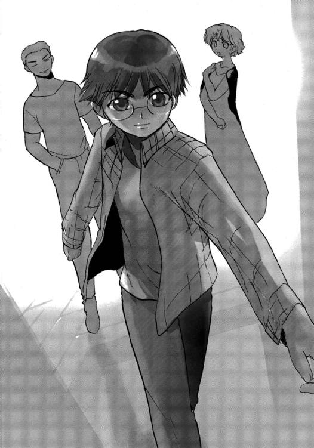
長距離跳躍が可能な大型貨物船が、一五〇〇光年彼方のヘンリエッタ星域に向かって、一週間後に出発する予定になっている。
マサラはそれに乗りこむことになっているのだ。
同行するのは、外交官と自衛官が数名。ただし、現地に着いたあとは、それぞれ別行動となる。ヘンリエッタ星域に到着するのは、およそ半年後だ。
「なんだか、マサラ君、どんどん遠い存在になってきちゃったね」
涙をぬぐいながら、アミィは笑おうとする。
「一年前のマサラ君のことを思うと、まるで別人みたい......」
「まったくだ」
イアイがため息をついた。
「人間が本気になるって、こういうことなんだろうな」
「イアイは、いつ本気になってくれるの？」
アミィがすねたような顔で、恋人を睨む。
彼女は浮気性のイアイにいつも苦労させられてきたのだ。そんなとき、彼女が相談するのがマサラだった。
「オレは、いつだって本気だぜ」
イアイが真顔でアミィを見つめる。
彼とマサラは同じ中高校の出身で、大学のとき一緒に上京してきた。もっとも、通っている大学や学部は違う。
アミィと知り合ったのは、上京して間もないころ。彼女が路上でパフォーマンスをしているところを、イアイが声をかけた。
それから二年間、ケンカしながらも続いているのだから、相性はいいのだろう。
「もう仲裁はできないからな。仲良くやりなよ」
マサラはふたりに笑いかけた。
それから、スターシップ・チャンネル・エンターテインメントを映しているマルチモニターに注意をもどす。
番組では、軍事評論家が二対四という劣勢で五分の戦いをしたアマテラスを絶賛している。しかし、アマテラスがもはや沈んだかのような口調で言うのが、マサラには気にくわなかった。
（香月シノンも言っていたじゃないか。希望を捨てないことが大切だって）
希望を捨てた瞬間に、敗北は決定する。希望を捨てないかぎり、たとえごくわずかでも勝機は残されている。あとは、そこにたどりつくだけの実力と運があるかどうかだ。
（ボクだって一年かけて、ここまできたんだ）
マサラはこれから一五〇〇光年の距離を超えることになる。
あともどりするつもりはない──
オペレーション14 ロスト・シップ
１
二三〇〇年六月二七日 現在地不明──
「──跳躍航法終了しました......」
第三艦橋勤務の副航宙士、摩耶アキホのいつになく緊張した声が、第一艦橋にも流れてきた。
「ミユリ......」
香月シノンはすがるような目で、幼なじみでもある主任観測員を振り返った。
「アマテラスの現在位置確認のため、観測を開始します......」
秋里ミユリの声も震えていた。
自由護衛艦アマテラスがワープの目的地に選んだのは、シュウ星系から一〇光年ばかり離れた惑星国家のない星系である。
だが、その座標に出現したかどうかは、まったく不明だ。
ミユリはメインモニターに光学観測器が捕らえた進行方向の映像を映しだす。
モニターいっぱいに宝石のような星空が広がる。
「星があるってだけで嬉しいよね。とりあえず、銀河系のなかってことだから」
「アンドロメダ銀河っていう可能性は？」
シノンが怖々と訊ねる。
「うっ！ 否定できない......」
ミユリは焦ったように、光学観測器の映像を切り替えてゆく。そして探し求めていたものを見つけだした。
光のカーテンのごとき散光星雲Ｍ42──オリオン大星雲。
散開星団ヘンリエッタは、地球から見てオリオン大星雲のちょうど裏側にある。そのため、通常の光学観測では、ヘンリエッタ星団の星々を地球から観測することはできない。もちろん、その逆もまた然りだ。
「よ、よかった......」
ミユリは声を詰まらせ、豊かな胸に手を当てる。
「みんなに連絡しようか？」
氷坂アレイが、独特の声と口調でミユリに声をかけた。
「もうちょっと待って。星の配置が、ちょっと気になるの。ワープ目標にした星系の恒星も見つからないし。シュウ星系から一〇光年離れただけとはとても思えなくて......」
ミユリはつぶやきながら、身を乗りだしてモニターを見つめる。そして画面を次々と切り替えて、全天を探査してゆく。
そして、しばらくしてから、
「五〇光年は、ずれてるみたい......」
と、呆然とつぶやいた。
「ぐらいじゃなく、正確な位置を割りだしてくれないか。場合によっては、ＡＧＩに救援要請しないといけないんだから」
キスカが強張った顔で言う。
五〇光年といえば、自力ではヘンリエッタ星系にもどれない距離だ。そして補給艦がやってこられない場所にまで跳んでいたとしたら、アマテラスはおしまいなのである。
「了解しました......」
ミユリは答えると、モニターを見つめながら、観測機器が収集したデータを解析してゆく。
そしてしばらくしてから、
「やっぱり、ヘンリエッタ星団の外に出ています。シュウ星系から銀河系中心方向におよそ六〇光年ほど離れた宙域です」
「六〇光年だって？」
キスカは艦長席から思わず腰を浮かしていた。
「もっとも近い惑星国家は？」
「惑星国家コルドバです。距離にして、およそ四〇光年」
「王国の領土じゃないか......」
ミユリの答に、キスカは呻き声をあげた。
「補給を受けないかぎり、この艦はあと一回のワープしか行えません。正確な跳躍ができるのはせいぜい一〇光年ほどです」
シノンがキスカを振り返って指摘する。
「ＡＧＩに輸送船の派遣を要請するしかないのか......」
キスカが不機嫌な表情になり、艦長席にふたたび腰を下ろした。
「荻野補給長を第一艦橋に呼んでくれ。それから、各部署に本艦の現状を伝達。それと、ドラゴンフライとの戦闘による被害報告を頼む」
疲れた声で、キスカが指示をだした。
「了解です」
アレイが答えて、アマテラスの各部署に連絡をはじめる。
その独特の声を聞きながら、
（でも、最悪の事態は免れたってことね）
と、シノンは心のなかでつぶやき、安堵の息を洩らした。
そのときだった。
「あれ？ なんだろ、これ」
各種の観測器を操作していたミユリが、突然、声をあげた。
「なにか、見つかったの？」
「それがね、進行方向から信号みたいな電波が送られてきたのよ......。すごく微弱なもので、数秒で切れたんだけど......」
「進行方向から信号？」
ミユリの言葉に、シノンは首をかしげる。
「アマテラスの進行方向って、銀河系の中心方向よね」
第一艦橋のメインスクリーンには見事な天の川が映しだされていた。
「パルサーとか電波天体からの放射じゃないの？」
「そういうのとは感じが違うの。でも、ただの雑音にしては規則性があったし......」
ミユリは電波観測器が捕らえた電磁波から背景放射や雑音などを排除する操作をはじめる。そして、その結果をメインスクリーンの副映像に転送した。
なんの秩序もない波形にしか見えなかったのが、処理が進んでゆくと規則性のある波形に変わっていった。
その波形は、観測員の資格を持っていないシノンでも見覚えがあった。
「これって救難信号じゃない！」
シノンは、思わず大声をあげた。
「ボクたちはミスワープしたんだぞ。なんで救難信号が送られてくるんだ？」
キスカは、気味悪そうにする。
「先客がいたってこと？」
アレイがいぶかしむように眉をひそめながら、会話に入ってきた。
「そんな偶然があるはずがない......」
「偶然とは限らないかもしれませんよ。たとえば、ミスワープで出現しやすいポイントとかが、この宇宙には存在している可能性だってあります」
シノンがキスカの言葉に反論してみる。だが、どういう根拠があるのかは、彼女にもわからない。
「救難信号が送られてきているのは事実なんだから、受け入れるしかないさ。宇宙空間に、まさか幽霊船ということもないだろうしね」
「やだ......」
幽霊船という言葉に反応し、シノンはわずかに首をすくめた。
宇宙にまつわるオカルト話が、いくつか頭をよぎる。
「ま、船籍コードを検索してみればわかるさ」
アレイが言って、ミユリが検出した救難信号から船籍コードを解析する。そしてそのコードをデータベースで検索してみる。
そして結果は、すぐに出た。
「外宇宙調査船ＵＮファウンデーション。建造されたのは、二一二二年。〝宇宙開拓時代〟初期の宇宙船だね......」
「ファウンデーション？ 知らないな」
キスカが首をひねる。
「二一二三年三月五日、ワープミスでロストと記録されている。当時は、たしか量子共鳴通信が実用化されていなかったと思うよ」
「それじゃあ、どこに跳んだか、報告しようがなかったんですね......」
シノンが沈痛な表情を浮かべた。
宇宙開拓時代の初期の人類は、なにかに憑かれたように、ひたすら外宇宙を目指していた。十分な実験もなく、新技術が次々と投入され、事故は頻繁に発生した。
宇宙開発史の研究家のあいだでは、『宇宙を相手に戦争を挑んでいるかのようだった』と論評されている。
それほど、宇宙開拓時代の初期には、犠牲者が多かったということだ。
宇宙で死んだ人間は、当時は間違いなく〝英雄〟だった。二三世紀も終わりを告げようとしている現在では、考えられない価値観なのだが......
「ファウンデーションが、どこを飛行しているか確かめられるか？」
「もう一度、信号が受信できれば判明すると思います」
キスカの質問に、ミユリが答える。
「二百年近く前の船なんだろ。よく救難信号を出しつづけられたな」
「信号はそれほど強いものではありません。それも数秒ほど発信して、止みましたから......」
「ここから惑星国家キビまで一〇〇光年はないから、救難信号はとどいてたってことね......」
シノンは思わず声を詰まらせた。
ただ、それを検出することは不可能だ。アマテラスの電波観測器でさえ、雑音と見分けがつかなったほど微弱な信号だったのである。
「ファウンデーションとランデブーして船内を調査しましょう。せめて遺体ぐらいでも回収してあげないと......」
シノンはキスカを振り返って提案した。
「......そうだな。とくに問題もないだろうし」
キスカはしばし考えたあと、うなずいた。
しかし、そのとき──
「機関室から緊急連絡です」
アレイが緊張した表情で、キスカを振り返った。
「通信回線をつないでくれ」
「了解......」
アレイは一連の操作を行い、機関室からの通信をメインモニターに主映像で映す。
モニターに機関長である榊原コウキの顔が映る。
角張った顔で、髪は短く刈っている。目は開いているのか閉じているのか遠目にはわからないほどに細い。
普段は寡黙で落ち着いた男だが、今はあきらかに殺気だっていた。
「──対消滅機関が暴走しているんだ！」
コウキは怒鳴るように報告を行った。
「なんだって！」
キスカの顔から、たちまち血の気が失せてゆく。
対消滅機関は、アマテラスに全エネルギーを供給している心臓部なのだ。
２
「──とにかく制御できないんだ！ 限界出力を完全に超えている。このままじゃあ保たないぞ！」
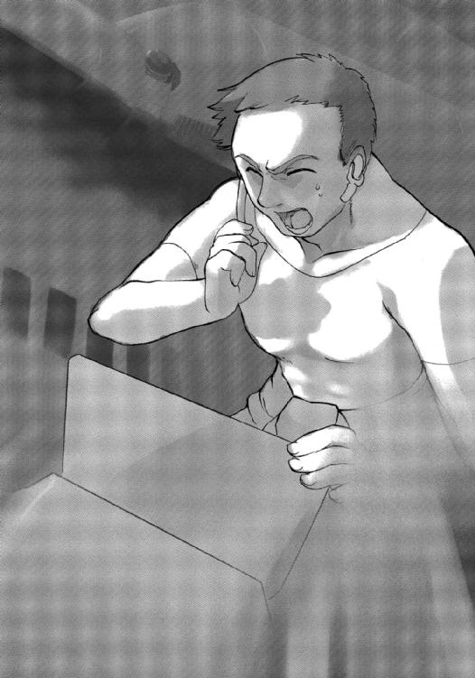
榊原コウキの緊迫した声が、第一艦橋に流れている。
対消滅機関は、陽子とその反粒子である反陽子を反応させることにより、アインシュタインの有名な方程式に従って質量を一〇〇パーセントまでエネルギーに変換する。
そうして発生したエネルギーを、運動エネルギーや熱エネルギー、さらには電気エネルギーなどに変換し、自由護衛艦アマテラスは動いているのだ。
「──このままでは、反応炉の温度が上昇して熔けちまうぞ」
「なんとか、できないのか？」
キスカがヒステリックに叫ぶ。
「艦橋からの制御も受けつけません！」
シノンがキスカを振り返る。
「結城科学士官に意見を求めてはどうでしょう？」
「そ、そうか。そうだな......」
キスカは繰り返しうなずくと、主任通信士のアレイに人工脳制御室と通信回線を開くように命じた。
「了解......」
アレイはそう答えはしたが、シノンの提案を聞いた時点で、すでに操作を開始していた。
「──なにか、トラブルでも？」
聖歌隊のメンバーにしたいような結城シメイの声が、第一艦橋に流れる。
アレイは機関室で発生している突発事態を伝えた。
「──それは大問題だね」
シメイは言ったが、モニターに映っている彼の顔は、まったく普段どおりだった。
「──反物質燃料タンクを切り離すのが、いちばんの解決策だね。燃やすものがなくなったら、火も自然に消えるわけだから。それから、ゆっくりと故障箇所を見つけて修理したほうがいいと思うよ」
故障や損傷した場合に備えて、反物質燃料タンクには強制排出機能が備えられている。
「反物質燃料を投棄してしまったら、エネルギーが不足しないでしょうか？ ＡＧＩの輸送船がいつやってくるかわからないのですから、エネルギーの無駄遣いは......」
シノンがシメイに質問を投げかけた。
我ながら貧乏性だなと思うが、生命維持装置をはじめとして、アマテラスの全システムは電力で動いている。その電力の供給源が対消滅機関なのである。
「──正論ではあるけど、このままだと反応炉がメルトダウンを起こして、反陽子ビームが、アマテラスの艦体に大穴を開けてしまうよ。反物質燃料はまだ予備があるけど、対消滅機関はひとつしかないからね......」
「それしか方法はないんですか？」
シノンは執拗だった。
「──あるかもしれないけど、ボクには思いつかないなぁ。とりあぇず、現場に出向いてみるよ。機関室に着いたら、また連絡するから」
「──艦体の温度、どんどん上昇しているよ」
第二艦橋の近接防御管制員、七瀬ユキノから悲鳴のような報告が入る。
それでなくても、アマテラスの艦体には、ドラゴンフライのパルスレーザー攻撃で受けた熱ダメージが残留しているのだ。熱変換発光素子〝ホタル〟による熱排出は継続されているが、それを上回る熱量が、対消滅機関から発生しているということだ。
「しかたない。反物質燃料を投棄しよう。機関停止後、補修班はただちに故障箇所の点検、修理を開始するように」
キスカが大あわてで下した命令を、アレイは機関室に伝達した。
「ちょっと待ってください」
シノンがあわててキスカを振り返った。
「なにか？」
キスカがうんざりとした表情で訊ねかえしてくる。
「ファウンデーションとのランデブーはどうなるんでしょうか？」
「緊急事態なんだぞ。後回しするしかないだろう」
「しかし、反物質燃料を放棄してしまったら、ランデブーするためのエネルギーが足りなくなるかもしれません」
「そのときは、あきらめるしかないだろう」
「だからです。対消滅機関が稼働しているあいだに、ファウンデーションとランデブーしておくべきだと思うんです」
シノンは訴えかけるように言う。
「ファウンデーションは救難信号を出しつづけたまま、二〇〇年近くも宇宙を漂流してきたんですよ。このまま見捨てるなんて、あんまりです」
「ボクたちだって、遭難しているんだぞ。しかも、対消滅機関が制御不能ときている。今は、アマテラスの安全を確保することが最優先事項なんだ」
キスカはいつになく強い口調で、シノンに反論した。自分の意見のほうが正論だと確信しているからだろう。
「対消滅機関から生じるエネルギーを最大限、運動エネルギーに変えれば、アマテラスに蓄積される熱量も、それほど大きくならないはずです。反応炉の温度が限界に達するまでは、ファウンデーションとランデブーするための努力を続けるべきです」
しかし、シノンも一歩も退かなかった。
「可能性がまったくないというなら、あきらめるしかありません。ですが、危険はともなうものの、ファウンデーションを救助する方法は残されているんです。それを放棄してしまっては、わたしたちはただの戦争屋になりはててしまいます。護衛艦の任務には、宇宙空間で発生した事故に対する緊急出動もあったでしょう？」
「それはそうかもしれないが......。わかった、キミがそこまで言うなら、副艦長に意見を求めてみよう」
キスカはそう言って、第二艦橋および第三艦橋との通信を開くようアレイに指示する。
「了解......」
アレイはその操作を実行し、音声と映像とでふたつの艦橋と通信回線を結んだ。
キスカはふたりの副艦長──桐生タカイと三上シントに、香月艦長補の提案を伝える。
「──へえ～、香月がそんな提案をな。ま、女らしくてけっこうなことだが......」
第二艦橋で砲術長を兼任する桐生タカイが意外だというような顔をする。
「──タカイくん、セクハラよ」
第二艦橋配属の副砲術士、若菜サンリのあわてたような声が隣から入ってくる。
「──これは失礼した。あ～、香月艦長補の心情には共感するところもあるが、オレはアマテラスの生存を最優先に考えたい。暴走している対消滅機関に負荷をかけるのは、危険だと思う」
「──ボクも桐生砲術長の意見に賛成かな。ファウンデーションの乗組員には申し訳ないけど、遺体を回収したとしても、帰してあげる家族ももはや過去の人だしね」
シントがひかえめに意見を述べた。
「貴重な意見、感謝する」
キスカはそれみろ、と言わんばかりに、シノンを振り返った。
「......わかりました」
シノンはうなだれるようにうなずいた。
艦長とふたりの副艦長までもが反対したのだから、さすがに引き下がるしかない。
だが、そのとき、
「──ちょっと、いいかしら......」
突然、通信回線が開いて、メインモニターの副映像のひとつに、通信制御室にいるディータ・ミルコフの顔が映った。
「な、なんでしょう？」
キスカがぎくりとなって、モニターに映るディータの顔を見つめる。
「──申し訳ないんだけど、シノンちゃんの意見を採用してくれないかしら。ここで遭難船を救出しなかったら、視聴者の印象が悪くなると思うのよ。番組的にもこれほど魅力的なシチュエーションを見逃すわけにもゆかないしね」
ディータは微笑んでいたし、その口調も優しいものだった。しかし、それは要請というより、命令のようなものだ。
「......わかりました。あくまで艦の安全を優先させますが、その範囲内で善処しましょう」
キスカは抵抗する意志さえ見せず、そう約束した。
シノンにとっては銀河ネットに後押ししてもらった格好だが、キスカのその豹変ぶりにはさすがに脱力感を覚える。
「そういうことだから......」
キスカは各部署にファウンデーションとランデブーすると伝えるよう、アレイに指示を与えた。
「榊原機関長には、対消滅機関には細心の注意を払ってほしいと伝えてくれ」
「了解......」
アレイが冷ややかな表情で答えた。
第二艦橋、第三艦橋からも、とくに異論は返ってこなかった。ふたりの副艦長も、銀河ネットの介入にはあきらめているのだろう。
（わたしって、綱渡りが好きなのかな）
シノンはふと思った。
（自分の策におぼれているつもりはないんだけど......）
暴走している対消滅機関を使って、最大加速、最大減速で漂流している調査船とランデブーする。
どう考えても〝裏技〟っぽい。
（こんなことばかりしていると、お嫁に行けなくなりそう）
シノンは自己嫌悪を覚えた。
しかし、彼女の提案は、実行に移されている。
まず、ファウンデーションから発信された二度目の救難信号が検出され、漂流している調査船の現在位置が特定された。
距離はさほど離れていなかったが、相対速度の差は大きかった。アマテラスは銀河中心方向に、猛スピードで航行していたのだが、相手は銀河外縁方向──より正確には太陽系に向かって、ゆっくりとした速度で漂流していたのである。
アマテラスは最大出力で減速を行いつつ、進路の修正も行う。
そのあいだにも対消滅機関の温度はどんどん上昇していった。アマテラスの艦体は、広告塔さながらにギラギラと輝く。
そして榊原機関長が悲鳴をあげるまで、アマテラスは最大出力で行動したのである──
３
「──いくらなんでも、これ以上は無理だ！」
榊原コウキの声が、第一艦橋に響いた。
「そうか......」
キスカがうなずき、アレイに目で合図を送る。
「反物質燃料タンク、切り離してください」
アレイが機関室に命令を伝えた。
「──了解した！ 反物質燃料タンクを強制排出する」
榊原機関長が大声で命令を復唱する。
そして反物質燃料タンクの強制排出は、ただちに実行された。
超伝導によって反物質を閉じこめている高価な燃料タンクは、機関から切り離され、宇宙空間に射出される。そして虚空へと消えていった。
タンクのエネルギーが続くあいだは反物質を閉じこめているが、やがては対消滅を起こして大爆発することになる。
「──対消滅機関停止。予備電力に切り替えたぞ」
コウキの安堵の声が流れる。
「ご苦労さまです。急いで、修理をお願いしますね」
シノンは映像つきで、営業用の笑顔を機関長に送った。
もっとも向こうが映像をオンにしているかどうかはわからない。
「これで一息かな......」
キスカが疲れきったという表情で、ため息をついた。
対消滅機関の暴走以外にも、被害報告は各所から届いていたが、致命的なものはない。
「ファウンデーションとはランデブーできそうか？」
「......可能だと思います」
ミユリが漂流している調査船との正確な距離と相対速度とを計算してから答えた。
ファウンデーションは今、アマテラスの二〇〇〇キロ後方に位置しており、時速にして五〇〇キロほどで追いつきつつある。
「ですが、あまり長時間はかけられませんね」
調査に使う小型艇の燃料も限られているのだ。
「ランデブーは四時間後か。それまでに準備を進めて、人選もしないとな」
キスカはそう言うと、大きくため息をつく。
「荻野補給長、入ります......」
そのとき、減速が止まり、無重力状態になった第一艦橋に、補給長の荻野セイが姿を現した。
「申し訳ないが、ＡＧＩに救援要請をお願いしてくれないか」
キスカが、声をかけた。
「それはかまいませんが、大出費は覚悟しておいてくださいね」
セイが不機嫌な顔になる。
「でも、それは必要経費だろ。銀河ネットワークが負担してくれる......」
「役人みたいな感覚で言わないでください。そういった費用も、最終的にはわたしたちに跳ねかえってくるんですからね」
セイはキスカの言葉を遮ると、宙を泳いで、シノンの席にやってきた。
「ここ、貸してもらっていいかしら？」
「もしかして、ここでＡＧＩとの交渉を？」
シノンは驚いて、セイを見つめる。
「最終報告しか見てないから、無駄な出費ができるのよ。ＡＧＩのあとには、銀河ネットとの交渉もあるのよ。儲かるとわかったら、連中、いろんな理由をこじつけて、権利を主張しはじめてるんだから。無茶ばかり言うと、あなたに身体をはって接待してもらうわよ」
「ご、ごめんなさい......」
セイの気迫に押されて、シノンはあわてて席を譲った。
まるで上司に怒られた新入社員のような気分だ。
（星間企業に入社してたら、こんな感じだったのかな）
営業成績が振るわなかったら、身体で契約を取ってこい、とか言われたかもしれない。
「補助席に座って、見学していてちょうだい」
「はい、わかりました......」
シノンはしおらしくうなずいた。
シュウ星系を舞台にした一連の戦闘ではレールガン〝スプラッター〟を使い捨てにしたり、六発もの魚雷を無駄撃ちしたりと、反省する点もいろいろ多い。
シノンは戦闘に勝つことだけを考えて戦術を組み立てているが、それが甘えであることも承知している。
戦費を節約することも、軍人の務めなのだ。
「第一級戦闘態勢を解除する。当直は第二艦橋だったよな」
キスカは早口で宣言すると、そそくさと第一艦橋を後にする。
そしてセイが量子共鳴通信でＡＧＩと連絡を取り、交渉を開始した。
ＡＧＩはアマテラスを支援するための特別事業部を発足させており、その対応は早かった。セイの要求した補給物資を搭載して、アマテラスのもとに向かうことを約束してくれたのである。
到着予定はおよそ五〇日後という回答であった──
４
調査船ファウンデーションとのランデブーは、三〇分後に迫っていた。
小型艇が収納された格納庫には、ファウンデーションの調査に向かうメンバーが、作業用宇宙服を着て集合している。
シノンも、そのメンバーに選ばれていた。
志願したわけではなく、チャンネルから要請されたのである。
彼女は航宙士の資格も、船外作業員の資格もない。本来なら、メンバーに選ばれることはなかっただろう。
（でも、わたしが言いだしたことだもの）
選ばれたのは、シノンにとって望むところだった。
調査隊の隊長には、副艦長の三上シント。しかし、彼は小型艇の操縦を担当するので、ファウンデーションの船内には入らない。
副隊長と船内捜索の指揮は、機関長の榊原コウキが務める。
艦橋勤務の女子からは、船外作業員の資格を持つ氷坂アレイと若菜サンリのふたりが選ばれている。あとはコンピューターに強い補給員の北条ユウ、機械に精通している補修員の徳山タクミ。
シノンは公式には記録員として同行することになるが、その仕事はスターシップ・チャンネルのレポーターである。
（せめて、足手まといにならないようにしないと）
シノンは自分を叱咤する。
訓練経験はあるものの、作業用宇宙服の扱いはうまいほうではない。
「調査にかけられる時間は、一時間と七分。それ以上、遅れたらアマテラスに帰れなくなるからね」
シントが注意を与えた。
「調査についてだが、何を優先したらいい？」
機関長の榊原コウキが訊ねる。
「まずは遺体の回収だね。それから乗組員の遺留品。事故発生前後の記録とかも手に入れたいところだね」
「了解した......」
コウキはうなずき、シノンたちを振り返った。
「作業用宇宙服には、ファウンデーションの船内図など必要な情報がインプットされてある。艦首付近のエアロックから侵入して、船内を捜索してゆく。そのあいだに北条は、人工脳の再起動を試みてくれ。それが無理なら記録装置を回収する」
「二〇〇年前の骨董品が相手だから、あまり期待しないでくれよ」
北条ユウは苦笑をもらした。
「ネットで検索してみたんだが、製造メーカーは二二〇五年に倒産して、資料請求もできない。それに当時のＯＳは現在のとまったく違っているんだ。セキュリティをかけられていたら、突破する自信はない」
そう言ったあと、できるかぎりの努力はするけどな、とユウはつけくわえた。
「がんばってくださいね」
サンリが激励の言葉をかける。
「がんばりましょう」
ユウは冗談めかして応じた。
「それじゃあ、みんな、小型艇に搭乗して。ファウンデーションまでは、快適に送りとどけるから」
シントが笑顔で声をかけた。
「了解！」
全員が声をそろえ、シントに敬礼を送る。
そして調査隊のメンバー七人は小型艇へと乗り込んだ。
「う～、心臓がばくばくする」
シートベルトで身体を固定させたあと、シノンは隣に座ったアレイにもたれかかるようにヘルメットを接触させて話しかける。
「わたしとサンリでフォローはするから安心しな」
アレイは優しく返してくれた。
予定の時間となり、小型艇はアマテラスの格納庫からゆっくりと離れる。
安全な距離をとってから、加速を開始する。そして加速が終わったとき、窓の外には古めかしいデザインの宇宙船が浮かんでいた。
「そろそろ、到着だよ......」
シントが、そう言いかけたときだった。
いきなり小型艇に、ドンドンという衝撃が走った。
「な、なんだ？」
北条ユウが狼狽した声をあげる。
「浮遊物破砕用の近接防御兵器がまだ生きていたみたいだ」
シントが普段どおりの口調でそれに答えた。
「パルスレーザーなんですか？」
シノンは宇宙服のなかで身を縮めながら、シントに訊ねた。
「旧式の機関砲だよ。すぐに沈黙させるから......」
そしてシントはアクロバットのような操船を開始した。
激しいＧがシノンたちに襲いかかってきたが、座席に張りつけられている身では、それに耐えるしかない。
この小型艇にも、浮遊物破砕その他の目的で小型のパルスレーザーユニットが装備されている。
シントはまるで二〇世紀の空中戦さながらに小型艇を操ると、二〇秒後に発砲を続ける調査船の機関砲を破壊した。
それから、もう一度、小型艇を安定させて、ふたたびファウンデーションに接近してゆく。
「小型艇のダメージはどうでしょう？」
シノンは不安そうにシントに訊ねた。
「いちおう軍用艇だし、装甲は頑丈だからね。致命傷ではないと思うよ。キミたちにも怪我はないよね」
全員に確認をとったが、幸いなことに負傷者は誰もいなかった。
「よかった......」
シノンはホッとして、宇宙服ごしに胸を手で押さえた。
「一〇メートルのところまで近づくから、あとは自力で頼むよ」
シントが声をかける。
「了解した！」
榊原コウキが気合の入った声で応じた。
想定外の障害があり、時間も燃料もロスを強いられた。迅速に行動しないと、アマテラスに帰還できなくなる。
そして小型艇は停止し、シノンたちはシートベルトを外し、解放されたエアロックから順番に宇宙空間に飛びだしていった。
無重力には慣れているものの、宇宙遊泳はまったく別種の感覚だった。シノンはバランスを失わないよう苦労しながら、ファウンデーションの銀色の船体を見定めて、ゆっくりと近づいてゆく。
ファウンデーションのエアロックに最初にとりついたのは、船外作業慣れしている徳山タクミだった。
彼はエアロックの解除を数回、試みる。
「ダメだ。開かない」
タクミがそう言って舌打ちするのが、シノンのヘルメットにとどく。
「まったくつまらないところだけが生きていて、必要なところは死んでいるんだからな」
タクミはそう毒づいた。
「エアロックを強制解放します。みなさんは下がっていてください」
サンリの声が流れてきた。
そして彼女は宇宙服のポケットから粘土状のものをとりだし、エアロックに貼りつけてゆく。
「なにをするんだ？」
タクミが怪訝そうに訊ねる。
「発破をかける──いえ、爆破するんですけど......」
サンリは当然というように答えた。
ただ、彼女の声で言われると、とてつもない違和感を覚える言葉だった。
「彼女は爆薬使用の資格を持っているんだ」
機関長のコウキがタクミに説明し、さっさと下がれと指示を与える。
サンリの実家は、小惑星帯で鉱物資源の採掘を行っている。その事業を手伝うため、彼女は防衛大学の宇宙兵科に入隊したのだ。
だから、爆破訓練も受けているし、船外作業の実習も受けている。目的がはっきりしているわけだから、彼女は誰よりも熱心な生徒だったし、成績も優秀だったと記憶している。
ただ、彼女自身がとにかく目立たない性格をしているので、その事実を知っている者は、ほとんどいない。
「それにしても、訓練どおりとはゆかないもんだな」
榊原コウキがため息を洩らす。
防衛大学では救難船に対する救助訓練も行っている。だが、近接防御兵器の出迎えなどなかったし、エアロックは外部から簡単に開けることができた。
「まだ、船内にも入っていないんですから......」
シノンは営業用の笑顔を浮かべて、コウキに激励の言葉をかけた。もっとも映像はつながっていないので、伝わるのは音声だけだ。
「そうだな。弱音を吐くのは、まだ早いな」
アマテラスの機関長であるコウキは、いつも実直に任務をこなしている。
機関員たちからは、〝おやっさん〟というあだ名で呼ばれているらしい。
跳躍航法のときに稼働される跳躍推進機関、通常空間を高速航行するための巡航推進機関、初期加速や方向制御、そして艦内の全エネルギーを供給する対消滅機関という三つの機関をこれまでなんの問題もなく運用してきた。
それだけに、機関員たちの努力がクローズアップされることはなかったわけだが、それこそが彼らにとっての勲章なのだ。
「液体ヘリウムのタンクに熱伝導ファイバーを引いて、暴走している対消滅機関を冷却しつづけてくれたって聞きました。おかげで、ファウンデーションとのランデブーができたんですよね」
シノンはマイクをオフにし、コウキとヘルメットを合わせて話しかけた。お礼だけに、肉声で伝えたかったからだ。
「それから、いつも無理ばかり言って申し訳ありません」
「それが、オレの仕事だから......」
コウキの戸惑ったような声がヘルメットを通して返ってくる。
「これからも、お願いしますね」
シノンはそう断っておいた。どうせ、これからも無理を言いつづけるに決まっているのだ。
そのあいだに、サンリはエアロックの爆破に成功していた。
内部に充満していた空気が、エアロックを宇宙の彼方へ吹き飛ばしてゆく。
船内の気圧は保たれていたということだ。
エアロックのもうひとつの扉も爆破しなければならない可能性があるので、サンリが単身、入ってゆく。
「扉は開くようです。でも、内部の空気が噴きだしてきますから、みなさんは近づかないでください」
サンリはそう言うと、手動で扉を開けた。
二〇〇年間、澱みつづけていた調査船内の空気が一気に外へと噴きだす。サンリはそれに逆らう様子も見せず、空気の流れに乗って船外へと流れでてきた。それから、宇宙服のスラスターを噴射させて、シノンたちのところへ帰ってきた。
空気と一緒に船内の備品も飛んでくるから、扉のところで頑張っていると、致命的な結果を招きかけないのである。
知識ではわかっていても、それを即座に実行するというのは決して易しいことではない。
（ホント、サンリって見かけによらない）
シノンは、舌を巻いた。
彼女はもっとも危険な仕事を一手に引き受けて、それを稽古事でもしているかのように、確実にこなしている。
空気と船内の備品の奔流が止まり（幸いなことかどうか遺体は流れだしてこなかった）、調査隊の六人はようやくファウンデーションの内部に侵入した。
当然のように、船内の照明は消えている。
（ちょっと不気味だな）
シノンは身を震わせた。
全員の宇宙服に装備されている照明によって、通路は明るく照らしだされるが、怪物でも出てきそうな不気味さがある。
（生きている人は、いないんだものね......）
その意味では、この宇宙船はまさに幽霊船なのだ。
「まず、ブリッジに向かう。そこで遺体が見つからなかった場合は居住区を探そう」
コウキが指示を送ってきた。
「わたしたちは今、二〇〇年ほど前に遭難した調査船ＵＮファウンデーションの船内を捜索しています......」
シノンは思いだしたように、レポーターとしての仕事をはじめた。
まじめに仕事をしなくても、あとから音声や映像をいくらでも合成できるのだが、生の感覚というのは大事にしたいし、自分の言葉で伝えたいこともある。
「船内はとても狭くて、押しつぶされそうな圧迫感を覚えます。昔の宇宙飛行士は、こんな環境のなかで生活していたんですね......」
シノンはしゃべりながら、ゆっくりと通路を泳いだ。
「ですが、彼らの努力があればこそ、今日の世界があることを、わたしたちは忘れるわけにはゆきません......」
今や人類は地球から一五〇〇光年も離れた散開星団ヘンリエッタに、数十もの居住惑星を開拓するに至っている。
「調査船ファウンデーションの宇宙飛行士たちは、ワープミスでこの宙域に跳んでしまいました。もはやワープすることはできず、食糧もエネルギーもごくわずかしか残されていません。しかし、彼らは地球に帰還するために、最大限の努力を試みたと考えられます。この船は正確に太陽系に向かって進んでいます。時速三六〇〇キロという、あまりにもゆっくりとした速度ではありますが......」
その努力に応えるためにも、たとえ遺体であっても、彼らを地球に送りとどけたいとシノンは思う。
感情的な提案だと副艦長兼砲術長の桐生タカイには受けとられたようだが、それに反論するつもりはない。もっとも感情的＝女性的というのは、オヤジの発想というしかないが......。
５
調査隊のメンバーは狭い通路を一列になって進んで、調査船ＵＮファウンデーションのブリッジに入った。
シノンはいちばん最後である。
「遺体はないな......」
と、コウキの不審そうにつぶやく声が聞こえてきた。
「オレと徳山のふたりで居住区のほうを探す。北条は予定どおり、人工脳にアクセスしてみてくれ。氷坂と若菜は、エンジンが始動するかどうかを確認。うまくいけば、この船をアマテラスと併走させることができる。そうしたら、ゆっくり調査できるからな」
「了解......」
「了解しました......」
アレイとサンリが声をそろえた。
ファウンデーションの主機関は核融合なので、燃料は長期間、安定している。故障や燃料切れを起こしていないかぎり、再始動の可能性はある。
（わたしはどちらに行こう？）
シノンは一瞬、迷ったあと、遺体の発見を優先させたいと思い、コウキのあとに続くことにした。
カメラは全員の宇宙服に装備されていて、通信制御室から遠隔操作も行えるので、映像素材に困ることはない。
機関長である榊原コウキと補修員の徳山タクミのふたりは居住区へと移動し、乗員たちの部屋をひとつひとつ開けてゆく。
遺体を発見する確率がもっとも高いと思われたが、意外なことにどの部屋でも遺体は見つからなかった。
しかたなく、室内に残されていた遺留品をいくつか回収してゆく。
「エンジン、再始動しません。おそらく燃料切れを起こしています。バッテリーは生きているみたいですが、救難信号の発信器と直結させているらしく、こちらには回ってきません」
アレイが報告を行った。
「というわけだから、こっちもお手上げだ。氷坂たちと協力して、記録装置からメディアを取りだす努力をしてみる」
北条ユウがため息まじりに続ける。
「急いでな。こちらは遺体の発見に全力を尽くす......」
コウキが応答した。
そして居住区から船内の各区画を順に回ってゆく。だが、遺体はどこにも見つからない。
「もしかすると、乗員たちは宇宙空間で眠ることにしたんじゃないか？」
タクミが困惑したように言う。
「そんなはずはありません！」
シノンは思わず強い口調で反論した。
「だったら、遺体はどこにあるんだ？」
タクミがむっとしたように問いかけてくる。
「わからないから、探しているんだろう。黙って任務をこなせ」
コウキがシノンの代わりに答えてくれた。
「わかりましたよ......」
タクミはぶつぶつとつぶやく。
「なんか気味が悪くなってきたぜ......」
「この船の乗員は、とても理性的に行動しているように思います。理由もなく、姿を隠しているわけではないはずです」
シノンが冷静に意見を述べた。
「核融合機関を燃料が尽きるまで稼働させて、可能なかぎりの速度で地球に進路を向けていること。バッテリーを発信器に直結させて、救難信号を出しつづけていること。乗員たちは、地球に帰りつくための努力を最大限行っているんです。宇宙船を離れるわけがありません」
「なるほど、な」
コウキはシノンの意見に相槌を打つ。
「それなら、自分たちの遺体を隠す意味がない。発見されやすい場所で最期のときを迎えるはずだ」
タクミが納得できないという口調で、そう指摘する。
「そうなんですよね......」
シノンもそのことには気づいていた。
「だけど、そこに手がかりがあるように思うんです。発見されやすい場所で最期を迎えない理由が彼らにはあったんじゃないかって......」
「どんな理由だよ」
タクミが呆れたというような笑いを洩らす。
「なにかの理由です！」
シノンは怒りを覚え、子供がするような言い返しをした。
「今、考えている最中なんですから、黙っていてください」
そして、自分ならどう行動するか、自問してみる。この絶望的な状況で、最後に取れる行動を。
「わたしなら、最後まで生きて帰る努力を放棄しないだろうな......」
シノンはひとりごとのようにつぶやいた。
しかし、それは答えではなく行動の指針でしかない。
「そんなこと無理に決まっているじゃないか。当時は地球から一〇〇光年ぐらいしか調査は行われてなかったんだぜ。航路も開拓されていないし、中継宇宙港も建設されていない。乗員たちが生きて帰り着く可能性は完全にゼロだ」
タクミは呆れたように言う。
「常識的に考えれば、たしかにそうだけど......」
シノンはそれでも自分の考えを捨てきれなかった。
「常識......か。もしかしたら！」
そのとき、なにを思ったかコウキがいきなり通路を引き返しはじめた。
「なにか思いついたんですか？」
シノンが期待をこめて、コウキのあとに続く。
「ああ、現在の常識と当時の常識は違うはずだから。宇宙開拓の初期では、冷凍睡眠が真剣に検討されていたのを思いだしたんだ。技術的な困難が解消されなかったのと、跳躍航法が実用化されたので、その方法自体が不要になったわけだが......」
「当時の宇宙飛行士にとっては、コールドスリープはまだ現実的な方法だったということですか？」
「この船に香月のような乗員がいたとしたら、その可能性を放棄しなかったと思う」
コウキはシノンを振り返り、バイザー越しに笑顔を見せた。
「はい、遠い未来に蘇生技術が発達していることに賭けたと思います」
シノンはヘルメットのなかで勢いよくうなずく。
賭けは外れたわけだが、それは結果論でしかない。たとえ蘇生しなくても、もっとも完全な遺体として故郷に帰ることができるのだ。
「コールドスリープか......、よく、そんなことを思いだせたな」
タクミの声には、なぜか悔しさが滲んでいた。負けず嫌いなのだろう。
「対消滅機関を冷却するため液体ヘリウムを使ったとき、ちょっと思いだしたんだ。そのおかげだな」
「この船にも、液体ヘリウムのタンクが積まれていましたよね」
シノンは調査船ファウンデーションの見取り図を思いだす。
タンクが設置されているのは、人工脳制御室の隣のスペース。先ほど覗いてはみたのだが、なにも発見できなかったので、すぐに外へ出た。
そのときには、まさかタンクのなかに乗員が入っているとは考えもしなかった。
「時間があまりないから、タンクごと運びだすのは無理だぞ」
「眠っているのを確認するだけにしましょう。液体ヘリウムから引き上げて、アマテラスに収容しても、どうせ蘇生はできません。いたずらに組織を傷めるだけです。それでは、彼らの努力を無駄にすることになりますから......」
シノンの提案に、コウキはすぐに賛成してくれた。
「遺体の回収が目的だったのに、なんのためにきたのかわからないぜ」
タクミがぶつぶつとつぶやく。
「いいじゃないですか」
シノンはタクミにそう笑いかけた。
「だって、この宇宙船には遺体はなかったんですから......」
コウキの予測は的中し、調査船ＵＮファウンデーションの乗員は、液体ヘリウムで満たされたタンクのなかで発見された。
彼らは裸で浸かったわけではなく、宇宙服を身に着けていた。急速に冷却すると身体の組織が破壊されるから、ゆっくりと温度を下げ、最後に液体ヘリウムを宇宙服のなかに流しこんだのだと思われた。
当時、信じられていた最善の方法である。
彼らを蘇生させることは、二三〇〇年の現在では不可能とされている。
しかし、将来、彼らを目覚めさせる技術が開発されるかもしれない。
そうだといい、と香月シノンは思った。
最後まであきらめなかった彼らの勇気が、奇跡を起こすことを心の底から願う。
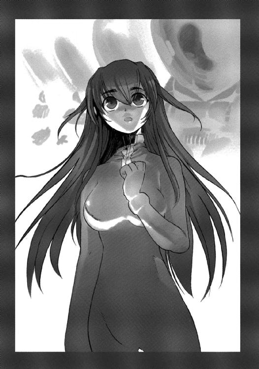
「──わたしたちアマテラスが、ワープミスをした結果、ファウンデーションと遭遇したのは、なんらかの物理学的な必然があってのことなのでしょう。ですが、わたしはあえて、勇敢な過去の宇宙飛行士たちが、わたしたちを呼んでくれたのだと考えたいと思います」
シノンは、番組のなかのレポートをそうまとめることにした。
オペレーション15 ファースト・キス
１
二三〇〇年七月二日ヘンリエッタ星域インカ星系──
アリマ・ジェネラル・インダストリのヘンリエッタ星域支社は、インカ星系の第三惑星にある。
インカ星系は惑星国家ではなく、ＡＧＩが所有する企業惑星だ。もともとは南米の数カ国が共同で植民惑星化を進めていたのだが、財政難その他の理由から計画が中止となった。一〇〇年以上も放置されていたのを、ＡＧＩが二〇年ほど前に買い取って企業所有の惑星としたのである。
工場プラントや巨大倉庫を備えた宇宙港を有し、地上とは最新式の軌道エレベーターで結ばれている。地上にも工場プラントは多数、建設されており、ＡＧＩの軍需部門のおよそ八〇パーセントが、ここで生産されている。
製品の大半はヘンリエッタ星域自治連合に所属する惑星国家に納入されており、残りは地球やその他の星域に輸送される。
自由護衛艦アマテラスも、ここで建造された。
そのアマテラスは今、ミスワープにより、ヘンリエッタ星域から四〇光年も離れた宙域を漂流している。
救助の依頼があったのは、一週間ほど前のことだ。
「あと二時間で出発なんですから、みなさん気合を入れてゆきましょう」
宇宙港の貨物施設で、三〇前後の男が大声をあげている。
彼の名前は、加瀬タイシ。半月前に新設されたアマテラスを支援をするための事業部に、営業マンとして加わった。
タイシは自分から志願して新事業部に転属してきた。出身は惑星国家キビ。ごく普通の私立大学を卒業し、七年前にこのヘンリエッタ星域でも有数の星間企業に入社した。
数万倍もの競争率をくぐりぬけてのものだけに、まさに異例の採用である。
入社当時、スキルはほとんどなかったが、度胸と根性を武器に徐々に実績をあげ、今では係長の肩書きを持っている。出世頭ではないが、同期のエリートたちからも一目置かれる存在だった。
そして彼の目の前では、何機もの小型艇が、〝ツクヨミ〟という艦名をつけられたアマテラス専用の補給艦にコンテナを積みこんでいる。
エアロックで気密は保たれているが、作業員は全員、宇宙服を身に着けて作業を行っている。そんななかで、彼ひとり背広姿だった。
「たった一週間で、本当に出航準備が整うとはな......」
苦笑を浮かべながら、ひとりの髭面の中年男が、タイシのところに泳いできた。
補給艦ツクヨミの船長オスカル・ベルトランである。
「無理だと思うことでも、やってみたらなんとかなるもんなんです。しかし、ここまでこられたのは、事業部全員の協力があればこそです」
タイシはそう言って、白い歯を見せた。
アマテラスから要求された物資をすべてそろえ、補給艦ツクヨミには長距離ワープや連続ワープに耐えられるよう改造を施した。
最短距離を通れば、二カ月後にはアマテラスがいる宙域に到達できる。
「アマテラスが今の状況に陥った元凶は、前任者の怠慢っすからね。一日でも早く、救助に向かいたいじゃないっすか」
対消滅機関のトラブルで、アマテラスは反物質燃料を半分、放棄している。しかも、あの艦は大飯食らいなのだ。
ゆっくりしていると、アマテラスはエネルギー切れを起こしてしまう。そうなれば、乗員も生きてはいられない。
「問題は〝王国〟がどう動くかだな......」
ベルトランが不安をのぞかせる。
彼は惑星国家コルドバの出身なのだ。その母国は今や王国──ヘンリエッタ星域惑星国家同盟に征服されてしまっている。
もっとも彼の家族は全員、この星系で暮らしているので母国に帰る必要はない。それに元宇宙軍の軍人とはいえ、もはや民間人である彼は、何も咎められることはない。
「ミスワープはしたものの、アマテラスが帰還可能だということは、チャンネルでバンバン放送してますからね」
タイシは厳しい表情でうなずく。
「そう言っておかないと、視聴者たちが契約を解除しちまうかもしれないからな」
王国側は、もはやアマテラスが帰還することはなく、今後の番組はすべてＣＧによる合成映像だとの声明を発表している。
王国が本当にそう信じてくれていたら、アマテラス救出プロジェクトとしては好都合なのだが......
「最短距離を通るには、王国の領土を通過しなければならないからな。惑星国家コルドバに帰るのは五〇年ぶりだよ」
ベルトランは苦笑を洩らす。
補給艦は同盟に属するふたつの惑星国家の宇宙港を経由して、アマテラスのもとへと行く計画を立てている。
そのひとつに、惑星国家コルドバも含まれている。
ＡＧＩは民間企業なので、王国領を通っても問題はないはずだった。しかし最近、王国はＡＧＩに対する批判も強めている。テロリストを支援する死の商人だというのだ。
「星間企業にケンカを売る国家がいるとは思えませんがね......」
広域経済は、すでに国家のコントロールから離れている。星間企業の多くは、平均的な惑星国家の国家予算に数倍する業績をあげているのだ。
税収の大半を星間企業から支払われる法人税に頼っている国家も少なくない。
しかも星間企業は互いに競争関係にあるが、経済活動の自由を守るためには共闘もしている。もしも王国がＡＧＩを攻撃するようなことがあれば、それは星間企業連合を敵に回すに等しいのだ。
そんな危険を冒すとは思いたくない。
しかし......
「最近の王国の動きは、予想できなくなっているからな。しかも、国王ペリエが病気で入院したそうじゃないか。後継を巡って、きな臭くなっているとの情報も流れている」
タイシが抱いている不安を、ベルトランが言葉にした。
そして、まさにそのときだった──
タイシの持っている携帯端末から、呼び出し音が流れてきた。
「はい、加瀬です......」
タイシは携帯端末を背広の内ポケットから取り出し、ディスプレイを開く。
ディスプレイに映ったのは、アマテラス支援事業部の事業部長である瀬尾カズトだった。
入社以来、技術畑を歩いてきた男で、アマテラスの設計チームの責任者を務めていた。あの艦のことなら、配線の一本に至るまで熟知している。
「──大変なことになった......」
ディスプレイに映る事業部長の顔色は、紙のように白かった。
「なにか問題でも？」
仕事にトラブルはつきものだ。それを解決することが仕事だともいえる。すべてが順調なら、中高生のアルバイトでも務まる。
「──王国の戦闘艦が、この星系に出現してきたんだ......」
呆然とした声で、事業部長は言った。
「──どうしたらいいと思う？」
事業部長は、すがりつかんばかりの表情だった。
「しっかりしてくださいよ」
タイシは思わず、携帯端末に向かって大声をあげた。
周囲で作業をしている者たちが、一斉に彼を振り返る。だが、声をあげた主を確かめると、何事もなかったように作業を再開する。
「王国の戦闘艦は、なにか言ってきたんっすか？」
タイシは事業部長に訊ねかえす。
「──艦名を名乗り、任務遂行のため、この星系にやってきたとだけ説明した」
「艦名はなんです？」
「──重装巡航艦コンキスタドールだ」
「コンキスタドールが......」
タイシはさすがに驚きを覚えた。
王国の戦闘艦コンキスタドールは先のシュウ星系での宇宙海戦にも参加していた。そのまま補給もすることなく、このインカ星系まで跳んできたということになる。
王国宇宙軍にとっては、エースともいうべき戦闘艦で、ヘンリエッタ星域自治連合に所属する戦闘艦三隻（そのうちの二隻はＡＧＩが建造している）を一対一の戦いで沈めている。
その経歴から裏切り者の烙印を押され、王国に敵対感情を抱く人々からは悪魔の艦とさえ呼ばれていた。
「エルロイの艦が、この星系に？」
ベルトランが、複雑な表情を見せる。
「そう言えば、船長も元はコルドバ宇宙軍の軍人ですものね。エルロイ艦長とは知りあいなんっすか？」
タイシはベルトランに声をかける。
コンキスタドールは、惑星国家コルドバが所有していた宇宙戦闘艦だ。
「退役した戦闘艦アルマダでは同僚だった。オレが副艦長で、あいつは砲術長。コンキスタドールが就航したとき、どちらかが艦長になるだろうと噂された。結果、勝ったのは奴で、オレはこのとおり軍を退役した」
そう言って、ベルトランは苦笑を洩らす。
「そんなことがあったんですか......」
タイシはため息をつく。
ある意味、運命の別れ道だったわけだ。
もしも、ベルトランがコンキスタドールの艦長職に就いていたら、独断で王国に降伏することはなかったかもしれない。だが、それはコンキスタドールが沈没していることを意味している。当然、ベルトランも戦死していたわけだ。
「おまえこそ、よくエルロイの名前を知っていたな。銀河ネットの番組で、か？」
「もっと前からっすよ。惑星国家コルドバに王国が侵攻してきたとき、オレは惑星国家キビのＮＧＯに参加して、コルドバに渡ったんです。〝人間の楯〟になるつもりだったんですが、結果はああですからね」
タイシは照れ笑いを浮かべた。
「それは、がっかりさせただろうな」
ベルトランが労うように、タイシの肩を叩く。
「いえ、いろいろと勉強になりましたよ。あのときの経験がなければ、今のオレはなかったかもしれません」
「そう言ってもらえればな。粗野に振る舞っているが、エルロイは情に厚い男なんだよ。そして驚くほど緻密に任務をこなす。エルロイの任務は、アマテラスの監視だった。銀河ネットでの放送がカムフラージュで、この星系ヘワープしてきた可能性を排除しなかったのだろう。あるいは、標的はわしの補給艦かもしれない......」
「考えられますね」
タイシは大きくうなずくと、携帯端末の向こうで、忍耐強く返事を待っていた事業部長にベルトランの意見を伝えた。
「──それで、キミはどうしたらいいと思うかね？」
瀬尾はタイシに訊ねてきた。
「予定どおり、出航させるしかありませんよ。そうしないと、アマテラスの乗員は、死んでしまうんですから！」
タイシはふたたび大声をあげた。
「──それはそうだが......、その......危険ではないかね？ コンキスタドールは減速しつつ、星系内に突入してきているのだ。宇宙港を攻撃する気ではあるまいか......」
瀬尾の声は不安そうだった。
「脅しをかけているだけっすよ。ここでツクヨミが出航を取り止めたら、同盟は戦わずしてアマテラスを排除できるんっすから」
事業部長は地球の日本出身で、東京大学工学部宇宙工学科出身のエリート技術者だ。優秀で実直な人物ではあるが、気迫に欠けるところがある。
事業部を立ち上げるとき、先頭に立って奮闘したタイシを信頼してくれたのか、問題が起こるたびに相談を持ちかけてくる。その都度、タイシは不眠不休で問題処理に駆けまわることになるのだが......
「──本社の重役も支社長も事態を憂慮している。すまないが、加瀬君、コンキスタドールと交渉してくれないかね。アマテラスを救うかわりに、宇宙港を破壊されるようなことにでもなれば、この支社は終わりだからな」
「わかりました。すぐに連絡を入れます」
タイシは答えると、携帯端末を乱暴に閉じた。
そして自分の頰を思いきり張って、自らに気合を入れる。
「それで、オレはどうしたらいいんだ？」
ベルトラン船長が訊ねてくる。
「とりあえず、積み込みを急いでください。ですが、王国領を通らせてもらうというのは、虫がよすぎたようです。他のルートを考えましょう」
「わかった。そちらはオレに任せてくれ。宇宙港の使用申請もやっておこう」
「お願いします」
タイシはベルトランとかたく握手をかわすと、速歩でその場から立ち去った。
オフィスにもどって、同盟の宇宙戦闘艦コンキスタドールと交渉するために......
２
「艦長、民間港湾施設の一般回線から通信が入っています。ＡＧＩのタイシ・カセという男です」
通信士が艦長席を振り返って、そう声をかけてきた。
「回線を開け」
重装巡航艦コンキスタドールの艦長デュール・エルロイは静かにうなずいた。
コンキスタドールは最初、王国──ヘンリエッタ星域惑星国家同盟の首都ともいうべき、スパルタ星系へと向かうはずだった。
だが、その途中で、アマテラスが健在であるとの放送が流れたのである。ミスワープはしたものの、帰還可能な宙域に出現したというのだ。
その放送にあわてたのは、同盟の報道官ハンス・ゲオルグ・ヘルマンである。
それが事実なら、シュウ星系における彼の作戦は失敗となるからだ。
しかし、皮肉なことに、彼を作戦司令に任じた当人が急病で倒れ、病院に収容されてしまっている。
マスコミには症状は軽く、意識もしっかりしていると発表しているが、それが真実かどうかはエルロイにもわからない。
今頃、同盟宇宙軍本部は、大騒動になっているだろう。
ヘルマンは、このコンキスタドールからルイス・ベルモント提督の高速攻撃艦マリアナに乗り換えて、スパルタ星系に急行している。
（あの演説屋も単純なものだ）
エルロイの口許に嘲笑が浮かぶ。
ヘルマンに高速攻撃艦マリアナに乗り移るよう進言したのは、実はエルロイである。
アマテラスの放送が真実だったとすれば、ヘルマンはシュウ星系における作戦失敗の責任を取らねばならない。
しかし、真実かどうかは、しばらくはわからない。アマテラスがいずれかの星系に姿を現さないかぎり、真偽は判定できないのだ。
ヘルマンは同盟の報道官の立場を利用して、アマテラスは視聴者を騙していると断言している。そうしないと、自身も不利になるからだ。
しかし、同盟としても、そう発表しておくほうが無難である。最高会議のメンバーも、公式の場で、彼の発表を否定するわけにはゆかない。
綱渡りを強いられてはいるが、ヘルマンはまだ失脚したわけではない。だが、味方は多いほうがいいに決まっている。
それゆえ、エルロイはマリアナに乗艦して帰国することを勧めたのだ。
マリアナの艦長ベルモントは、先の宇宙海戦でアマテラスの計略にはまり、戦わずして戦場から離脱を強いられるという大失態を犯した。しかもそのせいで、装甲砲撃艦レイテが沈められている。
このままでは、ベルモントの失脚は確実だ。だが、作戦司令であるヘルマンが、彼を評価する報告を行えば、話は多少なりとも変わる。
ベルモントとしては屈辱ではあろうが、ヘルマンを支持するしか保身の方法はないのだ。
しかも彼は、潜航艦アブキールの艦長であった故リカルド・ファレス提督とともに、同盟にとっては伝説的ともいえるパルシア宇宙海戦に宇宙戦闘艦の艦長として参加している。最高会議のメンバー中、最年長でもあり、その発言力は決して小さくない。
ふたりが共闘すれば、最高会議における主導権をとれる可能性もある。
エルロイは、暗にそれを勧めたわけだ。
貧乏クジをひかされたのは、突撃艇を失った高機動突撃艦リサの艦長ハルラール・ナジャである。彼は跳躍航行能力も、戦闘能力もないリサの司令艇とともにシュウ星系に残された。
表向きは、同盟に降伏した惑星国家シュウの戦後処理のための駐留である。だが、補給の関係上、シュウの宇宙港に寄港する必要がある。もしもシュウ政府が降伏宣言を撤回したら、彼は捕虜となるか、最悪、殺される。
そういうときこそ、軍人として覚悟や威厳を試されるわけだが、人工脳のシステムエンジニア出身の彼に、そんなものがあるはずがない。
しかしエルロイは、ナジャ提督には欠片も同情を感じていない。
彼が艦長を務めている戦闘艦リサは無人の突撃艇だけが戦闘を行う。惑星国家シュウの戦闘艦シェンロンの乗員が、必死の防戦を試みているあいだ、ナジャは安全な場所で人工脳のプログラムを走らせていただけなのだ。
味方であるエルロイでさえ、気分が悪くなるような戦い方だ。惑星国家シュウの軍人や国民は、どんな気持ちで見ていたことだろう。
（せいぜい苦労するがいい）
エルロイは心のなかで吐き捨て、メインモニターに映る東洋系の若者を見つめた。
ビジネスマンとは思えないほど、肝のすわった顔をしている。
（なかなか手強い交渉相手かもしれないな）
エルロイは艦長席で姿勢を正した。
「──ＡＧＩの加瀬タイシといいます」
モニターから訛りの強い英語が流れてきた。
エルロイは悠然と名乗りかえす。
「日系人のようですね。日本本国か惑星国家キビの出身でしょう」
副艦長が、小声で話しかけてきた。
ＡＧＩ自体が日系の企業だから、社員も日系人が多いのは当然だ。もっとも、惑星国家コルドバからもＡＧＩの社員になった人間はいる。
ひとりの男の顔が、エルロイの脳裏をよぎった。
「──このインカ星系は、星間企業ＡＧＩが所有しています。あなたがたの行為は、私有地に対する不法侵入です。すぐに退去していただきたい」
ＡＧＩの担当はそう要求してきた。
「それはできんな」
エルロイは即答した。
「この艦にはワープに耐えられるほどのエネルギーはない。本国から補給艦の到着を待つしかない。それとも、貴社の宇宙港で補給をお願いできるかな？」
その言葉は、噓ではなかった。
コンキスタドールは補給を受けないかぎり、もはやワープできない。
「──営業部の連絡先をあとでメールしておきます。正式に申し込んでいただければ、もちろん検討します」
しかし、若者はまったく動じた様子も見せなかった。
「──しかし、この惑星にワープしてきた理由を聞かせてください。その返答次第では、国連に提訴しなければなりませんから......」
「当艦の任務は、世界的テロリストの追跡である。彼らは自由護衛艦アマテラスと名乗っているようだが......」
「──惑星国家キビの亡命政府とその亡命軍であると、わたしは認識しています。もっとも、そんな議論をあなたとするつもりはない。国連安保理でも議論がわかれているんですから」
「つまり国連で結論が出るまでは、貴社独自の判断でテロリストを支援するということだな？」
いくぶん表情を厳しくして、エルロイはメインモニターに映る若者を睨みつけてみる。
「──そのとおりです......」
しかし、ＡＧＩの若い社員はまったく動じなかった。
「──あなたがた同盟も国連安保理で、侵略戦争を継続している軍事独裁国家という議論もありますからね」
「わたしもその議論を、この場でするつもりはないがね。しかし、我々が国際条約に違反した軍隊である可能性については、認識していただいてかまわないよ」
「──国際条約に違反する行動をとる可能性もあると言いたいんですか？」
「わたしは事実を述べただけだよ。それがどのように受け止められるかまで責任が持てんな......」
ＡＧＩの交渉担当が顔色を変えるのを見て、エルロイは冷ややかに答えた。
「貴社から同盟に所属するふたつの惑星国家に対し、宇宙港の使用申請がなされている。改装した補給艦の試験航海という名目だが......」
「──そう申請しているなら、そのとおりでしょう」
若者はそう言ってから、
「──いい加減、腹の探り合いはやめましょうや」
と、がらりと口調を変えた。
「貴様！ 無礼だろう！」
それまでエルロイの隣で交渉を見守っていた副艦長が血相を変えて、立ち上がる。
「──あいにく、オレは軍人とか政治家が偉いだなんて思っちゃいないんだ」
若者は傍若無人にそう言い放った。
「副艦長......」
エルロイは目で合図を送り、彼を黙らせる。
「わたしのほうも星間企業ごときに敬意など感じてはおらん。軍人として与えられた任務を遂行するだけだ。そして、そのためになにをすればいいか、正しく認識しているつもりだ」
「──だったら、オレも会社からの命令を守るだけだ。あんたたちに、その邪魔はさせない」
ふかく腕組みをしてどっかりと椅子に座り、タイシは挑みかかるような視線を、モニター越しに向けてきた。
（たいした度胸だ......）
怒りの表情を装いつつ、エルロイは内心、この若者に好意を感じていた。
この若者は売られたケンカは、かならず買う男だ。そしてケンカ慣れしている印象もある。
（サムライだな）
エルロイはそんな感想を抱いた。
「言いたいことは、それだけかな？」
エルロイは怒りの表情を装ったまま言って、交渉が決裂したことを突きつけてみる。だが、それでこの若者が態度を変えるとは思ってもいない。
「──当社としてはそれだけだが、個人的にはひとつある」
腕組みをしたまま、ＡＧＩの交渉担当は答えた。
「──惑星国家コルドバが同盟と戦闘をしたときに、あなたが取った行動は正しかったと、オレは思っている。命に値しないもののために、命を張る必要なんかはないんだ。あなたはあのとき、オレにそのことを教えてくれた。そして今、あなたと話してみて、あなたがあの頃と変わっていないと確信ができたよ」
そう言うと、若者はエルロイの返答も待たずに通信を切った。
「礼儀知らずの若造が！」
メインモニターの画像が、星系図に切り替わったのを見て、副艦長が激しい感情を表した。
「礼儀知らずは、オレも同じだからな。責めるわけにはゆかん」
エルロイは苦笑を浮かべながら、副艦長をなだめた。
「あの若者は、この仕事に命を張っていると宣言したんだ。また、その価値があるとも、な。そしてこのオレに同じ覚悟があるかどうかと突きつけてきたんだ」
「なんとも生意気な......」
副艦長は憮然とした顔をする。
「それで艦長はどうなんです？」
「オレの口から、負けを認めさせたいのか？ オレはこんな任務に命を張る気などない。この星系にワープしてきたことで、オレの目的はすでに果たされている......」
そう言って、エルロイは自室に下がると、副艦長に告げた。
これ以上はなにも話す気はないとの意志表示である。
「了解です」
副艦長は笑みを浮かべながら、敬礼を送ってきた。
エルロイは帽子を脱ぎ、ゆっくりと艦橋をあとにする。今は一Ｇで減速中なので、普通に行動ができる。
もっとも、宇宙船乗りにとっては、どちらが普通かは難しいところだ。
宇宙に出て、もっともよくわかったのは、生物がいかに素早く環境に適応するかという事実である。
宇宙空間で育てると、植物は細胞壁を退化させ、動物は骨格や筋肉を退化させる。
不要なものは、すぐに切り捨ててゆく適応力。それこそが生物の進化の原動力だ。低重力環境に適応し、空中を自由自在に飛ぶネズミが、国際宇宙港のひとつで発見されたというニュースも近年、報道されている。
人間も各地の植民惑星でわずかずつだが異なる進化をはじめているとの研究もある。
国連や各国政府は異口同音にそれを否定しているが、だからこそ信憑性があるのだと、一般の人々は信じている。銀河ネットの超科学チャンネル『ＴＯＮＤＥＭＯ』では、よく特集されるテーマだ。
地球環境を持ちだすことで、宇宙に進出してきた人間でさえもだ。
（だが、人間の本質は変わらないのかもしれない）
地球から一五〇〇光年も離れた場所に進出しても、やはり戦争はなくなっていない。
ヘンリエッタ星域ではじまったこの紛争は、未来の人類社会の縮図であると指摘する学者も少なくない。
「命に値しないもののために、命を張る必要はない、か......」
狭い通路を歩きながら、エルロイは先ほどの若者の言葉をつぶやいてみる。
六年前のコルドバ宇宙海戦のとき、彼はまさにそう考えた。それにしても、異なる惑星国家の若者に共感されるとは思いもしなかった。
「これから先、オレには命を張ることなどなかろうよ」
エルロイは自嘲の笑みを洩らす。
彼がこのインカ星系にワープしてきた本当の目的は、同盟宇宙軍最高会議議長の席を巡る後継者争いから身を遠ざけるためである。
〝傭兵〟である彼は、後継者候補にはなりえない。しかし、手札として使い捨てられる危険はある。
馬鹿げた権力争いに巻き込まれるなど、エルロイは願い下げだった。
それゆえ、〝海賊船〟の監視という大義名分のもと、この星系に避難してきたわけだ。
そしてその海賊船アマテラスだが、ＡＧＩの若者との交渉から、自力で帰還することはできない。しかし、救助可能な宙域にミスワープした、との確信を持った。
（アマテラスというカードは、ペリエの後継者争いにおいても重要になるかもしれないな）
エルロイはそう踏んでいる。
そしてそのカードの一枚は、彼の手のなかにある。
（それをうまく使えば、部下たちを家に帰すこともできるかもしれないな）
エルロイはそんな期待を抱いた。
３
ＡＧＩからの緊急連絡を受けたとき、艦橋要員で任務に就いていたのは、第三艦橋だった。
問題を重視した副艦長の三上シントは、艦長の神崎キスカともうひとりの副艦長である桐生タカイ、そして艦長補佐の香月シノンに伝達した。
補給艦が来ないと、アマテラスのエネルギーは尽きる。それは生命維持装置が停止することを意味している。
「王国は正気なの？」
作戦会議室にやってきたシノンは、全員が顔をそろえているのを確認すると、我慢できないというように文句を言った。
「民間企業を攻撃したら、どうなるかわかっているのかしら」
シノンは無重力状態の会議室を泳ぐように動いて、自分の席に腰を落ち着ける。
「今のところ、王国は何の声明も出していないわ。おそらくは示威行為でしょうね。実力行使に出る意志はないと思う」
第三艦橋勤務の星間気象観測員であり、アマテラスの報道官でもある間宮リオが答えた。
「だといいけど......」
シノンはため息をついた。
「それで、ＡＧＩの対応は？」
もしも脅しに屈して、補給艦の出航を見合わせるようなことにでもなれば、アマテラスはおしまいなのである。
「大丈夫。補給艦は出航させてくれるわ。ただ、予定どおりとはゆかないけどね......」
「どういうこと？」
シノンは眉をひそめる。
「補給艦は、アマテラスまで四回のワープを予定していたんだ。途中、二回の補給を行ってね」
シノンの質問に答えたのは、三上シントだった。
そして彼はテーブルのモニターにヘンリエッタ星域の星域図を映す。
「アマテラスの現在地は、ここだ」
星系図にアマテラスを示す女神のアイコンが表示された。
ヘンリエッタ星域から銀河中心方向に二〇光年ほど離れた位置である。
「インカ星系はここ」
ヘンリエッタ星域の星のひとつが、赤い丸に囲まれる。
シントはそこに緑色の三角形を重ねる。ＡＧＩの補給艦を示しているのだ。
そして補給艦とアマテラスとが、白い線で結ばれる。途中、ふたつの星系を経由していた。
「ムガール星系とコルドバ星系？ 両方とも王国の領土じゃないですか？」
シノンが驚いて、シントを見つめる。
「そういうこと。ＡＧＩは民間企業だから、問題ないと思ったんだろ。だけど、王国があんな態度を取ったもんだからね」
「ＡＧＩも、拿捕される危険を感じたんですね」
シノンはうなずいた。
当然の判断である。最初からそのぐらいのことは予測してほしいと言いたいぐらいだ。この輸送には、アマテラスの運命がかかっているのだから。
「そこで遠回りだけど、こういうルートに変更したんだそうだ。ワープは六回、寄港は三回ということになる」
補給艦とアマテラスとを結ぶ新たな黄色い線が星域図に表示された。
王国の領土を迂回して、連合に加盟している惑星国家の宇宙港に寄港してゆく。
「これだと、だいぶ時間がかかりますね......」
シノンが不安そうにつぶやく。
「補給艦の最大加速は、戦闘艦とは比べものにもならないからね。寄港のために星系内を移動するだけで、二〇日はかかる」
そう言って、シントは肩をすくめた。
「三回の寄港で六〇日ですか。二回の連続ワープが可能として、跳躍推進機関の充塡も三回は必要ってことになりますね」
「ここにワープしたあとも、ランデブーのために日数がかかるしね。九〇日ぐらいは覚悟しないといけないだろうね」
「九〇日......」
アマテラスは無補給でも半年の行動が可能だ。
しかし対消滅機関のトラブルで反物質燃料のタンクをひとつ投棄してしまっていて、予備のタンクはひとつしかない。
「補給艦の到着まで、燃料が保つんでしょうか？」
シノンは救いでも求めるような目で、シントを見た。
「そんな顔をされても、ボクにはどうにもできないよ。今、結城科学士官と荻野さんが計算しているところだから、その報告を待たないと......」
シントの言葉が終わるより先に、艦内に通信が流れた。
「──荻野です」
補給班長であるセイの声が響いた。
「どうだった？」
リオが、通話器を取ってセイに訊ねる。
「──厳しいところね」
セイの口調は重かった。
「──食糧や日常の消耗品は補給したてだから大丈夫。問題なのは、やっぱりエネルギーよ。反物質燃料は、今の残量だと六〇日ぐらいしか保ちそうにないわ」
「それは、普通に使っていたらかしら？」
リオが訊ねかえす。
「──その通りよ。でも、節約しても九〇日というのは厳しいみたい」
「エネルギーが切れたら、何日、生きていられるんだ？」
焦りのためうわずった声で、キスカが横から口を挟んだ。
「──三日と保たないわよ。宇宙服を着用すれば、もう一日ぐらいは延ばせるけどね」
「何か対策はないのか？」
「──結城科学士官によれば、対消滅機関以外の方法でエネルギーを発生させるしかないとのことよ。その方法はみんなで考えよう、ですって」
「エネルギーを発生させる？」
キスカは怪訝そうな顔をした。
「──艦内にある物資のリストを全乗員に送付するから、みんなで知恵を絞りましょ。目標は、この艦が消費するエネルギーの二〇日分。無駄遣いを反省するには絶好の機会ね」
セイはそう言うと、通信を切った。
「わたしって一生、貧乏から抜けられないのかしら」
シノンは思わず天を仰ぐ。
「聞いたとおりだ......」
キスカがテーブルの上で手を組むと、不機嫌に言った。
「艦内にある資材を使って、二〇日分のエネルギーを生みださないと、ボクたちはおしまいだそうだ」
「太陽光発電機があったじゃないか？」
タカイが不思議そうに言う。
「発電機はあるけど、近くに太陽がないだろ」
シントが笑いかえす。
「だったら、発電に十分な太陽光のあるところまで行けばいいじゃないか？」
「一回のワープと太陽に向かって針路変更するためのエネルギー消費のほうが遙かに大きいよ。運が悪いと、目的地に着くまでにエネルギー切れだね」
「そうか......」
タカイは残念そうにうなずく。
「あと思いついたのは、トレーニングルームのエアロバイクに発電機をつけるぐらいだな」
「人力で発電だって？」
キスカが口をあんぐりと開ける。
「頭が痛くなりそうだ......」
「節電のため、人工重力は止めるんだろ。そのあいだ、筋肉と骨格とに負荷を与えないと、輸送船が到着したときには、加速に耐えられない身体になってるぜ。無駄に運動するぐらいなら、いくらかでも電力に変えたほうがましだろ」
人間でも数百ワット級の発電能力があるのだ。
「確かだね」
シントが楽しそうに笑った。
「参考例としてみんなに伝えたら、呼び水になるかもしれませんね。最新鋭の戦闘艦に、電力を供給すると考えると、プレッシャーがかかりますから」
シノンも微笑みながら言った。
「画期的な発明は、柔軟な発想からというわけだ」
シントが、シノンの言葉に相槌を打つ。
「褒められている気がしないな」
タカイが憮然とした顔になる。
「そんなことありません。わたしは、本当に感心したんですよ。それに安心もしました。この艦には科学や技術に強い乗員もたくさん乗っていますし、銀河ネットとも量子共鳴通信でつながっているんですから、参考資料も検索できます。きっといいアイデアがでますよ」
「そう願いたいわ......」
リオが力無く笑う。
「でも、確実なのは節約することよ。とにかく、無駄は徹底的に排除しないと......」
「ストレスがたまりそうだな」
タカイが渋い表情になる。
「電力を使わない娯楽だってありますわ。三カ月、寝て暮らせると思えば、最高の贅沢ではなくて？」
「なるほどな。全員に避妊具を配給しておいたほうがいいかもしれないな......」
タカイがひとりごとのようにつぶやく。
「避妊具って......」
リオは顔を真っ赤にして、言葉を失う。
「サンリには、多めに渡しておきましょうか」
シノンが営業用の笑顔を浮かべて、タカイを見つめた。
「そうきたか......」
タカイはがっくりとなる。
彼のほうから手を出したわけではないのだが、女子たちは団結して、タカイに責任を取らせようとしている。
うかつに他の女子に声をかけようものなら、浮気者呼ばわりされそうだ。
サンリのことが嫌いというわけではないのだが、この年齢でひとりの女に縛られたくはないと思う。
「自業自得というものですわ」
リオが冷たく言って、ぷいと横を向く。
そしてキスカと目が合ってしまう。そして、彼がどこかしら落ち着きのない顔をしているのに気づいた。
なんでそんな顔をと、リオは疑問に思ったが、次の瞬間、ハッと気がついた。
（そこまで許すつもりはなくってよ！）
リオは心のなかで叫ぶと、キスカを睨みつけた。
釘を刺しておかないと、この男は絶対に関係を求めてくるに違いない。
（輸送船がくるまで乗り切れるかしら......）
リオ自身、意外だったのだが、どうも押しには弱い性格みたいなのだ。
政治家としても女としても、まだまだ未熟だわ、とリオは心のなかで深いため息をついた。
４
「あら、シノンちゃん......」
スターシップ・チャンネルのメインキャスター、ディータ・ミルコフが満面の笑顔で、香月シノンを出迎える。
「なにか御用？」
首をかしげながら、のんびりとした声をかけてくる彼女を見ていると、番組を収録しているときの凛とした姿は想像もできない。
「お願いがあってまいりました」
シノンはそう言うと、深々と頭を下げた。
「個人的なお願いじゃなさそうね......」
ディータはそう言うと、大小のモニターに向かって、じっと腕組みをしているスターシップ・チャンネルのエグゼクティブ・プロデューサー、ピーター・スパイクスの様子をうかがう。
ヘンリエッタ星域から四〇光年も離れた場所にミスワープするという突発事態のため、放送予定していたプログラムの大幅な変更を余儀なくされ、ここ数日、スパイクスはほとんど一睡もしていない。もはやトレードマークというべき無精髭も伸びきって、髪も乱れている。
そのまま、まるごとクリーニングに出したいぐらいの汚れっぷりだが、アマテラスが現在、航行している宙域では、そんなサービスは行われていない。
ディータは真顔になってから、
「ボス」
と、呼びかけた。
「なんだ？」
不機嫌な顔で、スパイクスは振り返る。
「香月艦長補が見えています」
ディータはビジネスライクに言うと、シノンを振り返り、
「あとは自分でね」
と、ウィンクを送った。
そして液晶ボードを片手にスタジオへと入ってゆく。
スターシップ・チャンネルでは、アマテラスとの交信が不通であると五時間以上も報じ、たっぷりと視聴者に緊張感を与えてから、ミスワープはしたものの帰還は可能だという事実を大々的に発表した。
その反響は凄まじいもので、アマテラスの勝利を祝い、王国の侵略戦争を非難するデモやらパレードやらが、世界の各地で起こったそうだ。
これで、各国政府や国連が動いてくれれば、アマテラスは本当の勝利を得られるわけだが、残念ながらその兆候はない。
むしろ、市民運動がもりあがればもりあがるほど、各国政府や国連の反応はアマテラスに対し、冷淡になっている感がある。
とくに強硬なのはフランスとロシアで、アマテラスに停戦を要求する決議案を国連安保理に提出するとの未確認情報さえ入ってきている。
王国──ヘンリエッタ星域惑星国家同盟はあくまで国家だが、アマテラスはどう言い訳しても国家とは言い難い。
そういう存在が武力を持ち、国境を超えて世界の民衆の支持を得ているという事実は、全人類の社会秩序を根底から覆しかねないと認識されているのかもしれない。
アマテラスは当分のあいだ、孤独な戦いを続けるしかない情勢なのだ。
（もっとも、無事に帰り着けたらの話だけど......）
シノンは心をひきしめ、スパイクスと向かいあった。
彼女は荻野補給長に脅迫され、銀河ネットにエネルギー節減の協力要請をするため、この通信制御室にやってきたのである。
「アマテラスのおかれている状況は、ミスター・スパイクスもご存じのとおりです。現在、我々は深刻なエネルギー危機に直面しておりまして、このままでは補給艦が到着するまえに、エネルギーが底をついてしまいます。生命維持装置が止まるような事態になれば、わたしたちは三日と生きてはいられません......」
「オレは、気が短いんだ」
スパイクスはいらだちを隠そうともせず、長々とはじめたシノンの説明を遮った。
「前置きはいらん！ 用件だけを言え!!」
スパイクスはシノンの鼻先に指を突きつけてくる。
シノンはうっとなったが、ここで怯んでいるわけにはゆかない。
「エネルギーの節約のため、量子共鳴通信を全回線オフにはできないでしょうか？」
「結論だけを言う。答えはノーだ」
スパイクスはそう言って、さっさと仕事にもどろうとする。
交渉の余地はまったくなさそうだが、ここで引き下がったら、今度はセイに何を言われるかしれない。
「乗員全員の生命が危険にさらされるんです。もちろん、みなさんも......」
「それぐらいのことで放送を止めちゃあ、この業界じゃ生きてゆけねぇんだよ。それでなくても、これから半年間、まったく戦争ができねぇんだ。どうやって視聴者をつなぎとめるかで、こっちは頭がいっぱいなんだ。エネルギーは、おまえたちのほうでなんとかしろ。このチャンネルに視聴制限をかけたくないならな」
「し、視聴制限......」
スパイクスの言葉に、シノンは顔を真っ赤にさせる。
このチャンネルをＸ指定──アダルトものにするぞ、と彼は脅したわけだ。
それなら、ＣＧだけでも安直に番組が作れるし、一、二年は安定した収入を得ることができるだろう。
（でも、そんなもの、全世界に放送されたら、お嫁にゆけない）
シノンは泣きたくなった。
これまでも、レオタードだったり水着だったりと、露出の多い格好をいろいろさせられている。
これ以上は、たとえＣＧであっても絶対に見せるつもりはない。
セイの冷たい顔が脳裏に浮かんできたが、チャンネル側の事情もわかるだけに、シノンとしては強気にはなれなかった。
「できるかぎりでけっこうですから、節約を心がけてください」
シノンはそれだけを訴えると、逃げだすようにスパイクスに背を向けた。
しかし──
「戦争がないんだから、しばらくは娯楽中心でゆく。無重力環境でも歌は唄えるし、楽器は鳴るからな。おまえたちも、どうやら暇になるようだし......」
スパイクスはシノンの背中に向かって、声をかけてきた。
「歌とか演奏なら......」
シノンは恐る恐る振り返って、うなだれるようにうなずいた。
「ドラマやバラエティも、だ」
「ヌードとかベッドシーンがないなら......」
シノンはふたたびうなずくと、それ以上はなにも聞きたくないとばかり、通信制御室をあとにした。
５
「何人たりとも！」
アマテラスの副艦長にして砲術長でもある桐生タカイはそう吠えながら、エアロバイクのペダルを必死の形相で踏みこんでぃた。
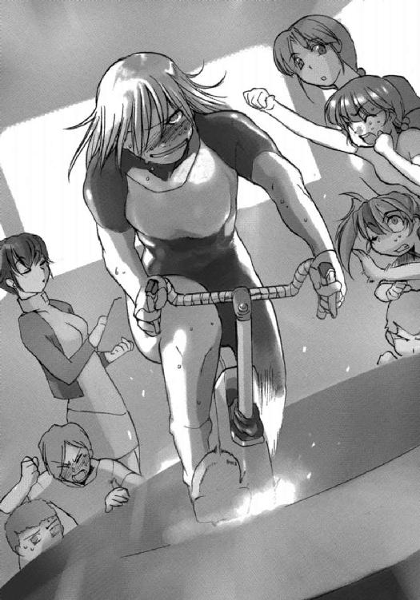
「タカイ君、がんばって！」
若菜サンリが、声を限りに応援する。
タカイが乗るエアロバイクには、発電機がとりつけられ、小型のバッテリーと配線でつながっている。
トレーニングルームに一〇台設置されているエアロバイクは、今や人力発電機と化していた。無論、筋力の低下や骨の老化を防止するという本来の目的も兼ねている。
ただ漕ぐだけではおもしろくないということでマニュアルを調べていたら、サイクリング・ロードレースのシミュレーター機能があることが判明したのだ。
そこで人力発電の発案者であるタカイが、アマテラスの男子から有望どころをスカウトして、チーム・アマテラスを結成したのである。
そしてグラン・ツール・モードで、難易度をノーマルに設定してゲームをスタートさせた。チームやレーサー、コースのデータは、フランスのグラン・ツールの第百回の記念大会のときのものだ。
今は九日目。勝負どころの山岳ステージにさしかかっている。
エアロバイクの前方には大型のスクリーンが運びこまれ、シミュレーターの映像を映しだしていた。
木々の緑が太陽の光に照らされ、きらきらと輝いている美しい風景だった。
モザイク模様のような木洩れ日が映る急峻な坂道を、背中に『ＡＭＡＴＥＲＡＳＵ』のロゴと香月シノンがデザインした女神のイラストがプリントされたメタリックシルバーのバイクスーツに身を包んだ男が、競技用自転車にまたがり、ひたすら登りつづけている。
タカイがコントロールするバーチャルレーサーだ。
ゼッケンナンバーは２３１。二三番目のチームのエースナンバーである。彼の周囲には、タンデムでカメラマンを乗せた報道のオートバイが護衛船団のように取り囲んでいる。そして道の両脇には、ずらりと並んだ観客の姿。
彼の後ろには、同じユニフォームを着たふたりのレーサーが続いている。ＵＳピストルというチームに所属するエースとそのアシストだ。
「ホラスも、アームストレンクスも、ちぎっちゃって！」
サンリは本気で興奮しているらしく、無意識に飛びあがってトレーニングルームの床から身体を浮きあがらせている。
彼女の隣で観戦している神谷イマリがユニフォームをつかんで、床にひきもどすのだが、サンリはすぐにまた床を蹴ってしまって、宙に浮かんでしまう。
「けっこう興奮するよな」
七瀬ユキノが拳を握りしめながら感想を洩らす。
いつもなら彼女がもっとも大きな声をあげるのだが、今はサンリの迫力に圧されてしまって、おとなしく観戦している。
「サイクリング・ロードレースは、ヨーロッパではサッカーやモータースポーツと並んで人気があるからね」
スポーツ全般にくわしい神谷イマリが、ユキノに説明した。
トレーニングルームには娯楽に飢えた乗員たちがかなりの数、集まっていて、アルコールの入ったボトルを片手に、異様なもりあがりを見せている。
サンリも最初は遠慮がちに見ていたのだが、最後の上りにさしかかり、タカイが猛然とアタックをかけると、我を忘れたように声援を送りはじめたわけだ。
「ガンバ、ガンバ」
チーム・アマテラスの監督役に名乗りでた研修医の篠原ミナセが、タカイのバイクに近寄っていって声をかける。
彼女は参加メンバーのフィジカル・データを調べてチームの戦略を決定した。
アスリートのタカイは総合優勝も十分、狙えるということで、他のメンバーはアシストに徹する。ゴール勝負になったときは、機関員の藤岡ミツヤをスプリンターにたてる。
同時に、彼女はチームドクターでもある。心拍数や血圧などのデータをチェックし、メンバーに負担をかけすぎないよう配慮もしている。
負けず嫌いがそろっているので、放っておくと脱水症状や低血糖症状を起こしかねないのだ。
「心拍数も問題ない。このまま山頂のゴールまで一気に突っ走る」
「ラジャ～」
タカイはミナセに答えると、椅子から腰をあげてペダルの回転数をさらに上げる。
大型ディスプレイにはアタックをかけた彼に、ふたりの選手が必死にくらいつこうとする映像が映しだされていた。
勝負は、この三人に絞られている。
「それにしても、ノーマルでこれかよ......」
タカイは思わず後ろを振り返るが、そこには、もちろん見物人の姿があるだけだ。
「ハードだったら、完走もできないよな」
「彼らはプロなんだから、あたりまえ。心肺機能とか鍛えている筋肉とか、ぜんぜん違う。体脂肪率だって一〇パーセントもない」
「こんなのを毎日やっていたら、体脂肪なんて残るわけないぜ。先生も女子でチームを組んでみたらどうだい？」
タカイは荒い息をつきながら、ミナセに声をかける。
「それ、セクハラだから」
ミナセはそう指摘して、タカイの背中を思いきり叩いた。
彼女は粘着靴を履いているので、無重力環境でも身体は床に着いている。だが、タカイのほうは不安定なまま漕いでいるので、当然のようにバランスを崩した。
と、ディスプレイに映っているタカイのバーチャルレーサーが、派手に転倒した。
トレーニングルームに集まっていた見物人から悲鳴、歓声、罵声といったものが洩れる。
「オレたちの犠牲が......」
八人のチームメイトが、がっくりとうなだれる。
彼らはエースのタカイをここまで連れてくるため、献身的な努力をしてきたのだ。
「あれ？」
ミナセは啞然となる。
「シミュレーターで、こんなところまで再現する？」
ディスプレイを指さし、ミナセは文句を言った。
「していた......みたいだな」
タカイは姿勢を立て直し、ふたたびペダルを踏みはじめるが、ディスプレイのなかのレーサーはなかなかリスタートしない。
そのあいだにＵＳピストルのふたりの選手に、致命的な差をつけられてしまった。
「監督......」
タカイは完全に気力を失い、その差は詰まるどころか開いてゆく一方だ。
「ごめん、ごめん、リセットかけようか？」
「山道を二〇〇キロもだぜ。勘弁してくれよ」
タカイは舌をだらりとだし、ふたたびペダルを踏む足に力を込めた。
だが、そのステージは、トップから三二秒遅れの三位という結果に終わったのである。
「明日も山岳ステージだから挽回できる」
ミナセはそう言うと、トレーニングルームからそそくさと去ってゆく。レースはまだ一〇ステージ以上も残しているのだ。
「ご苦労さま......」
サンリが宙を泳いできて、タカイにタオルとドリンクを手渡す。
「し、死んだ......」
タカイはエアロバイクから身体を浮かせ、うめき声を洩らす。
「それで、オレはどれだけ発電したのかな......」
エアロバイクには、かかった負荷を電力単位で表示する機能があるので、トータルの電力量もわかる。もっとも、そのすべてが電気エネルギーに変換されるわけではない。
サンリはエアロバイクのモニターを操作して、トータルの電力量を表示させてみた。
その数値を見て、彼女は表情をくもらせる。
「......見ないほうがいいと思う。明日もまた走るんだから......」
サンリは遠慮がちに声をかけた。
「でも、こういう努力の積み重ねが大事なんだし、それにみんなも楽しんでいたし」
サンリは、あわててフォローする。
「こんな提案......するんじゃなかった......ぜ」
タカイはそう言い残すと、力尽きたようにそのままトレーニングルームの宙を漂いつづけた。
自由護衛艦アマテラスの乗員は、エネルギー節約のため、これまでとはまったく違う日常を送っていた。
とにかく輸送船が来るまでなにもすることがない。いや、することはいろいろあるのだが、エネルギーの無駄遣いになるので放置しておくしかないのだ。
遠心力による人工重力も止まり、食堂やトレーニングルーム、医務室といった人工重力区画も完全な無重力状態となっている。
それでも、照明のついている場所は限られているので、暇な人間は食堂へと集まってくる。
その照明も、熱変換発光素子〝ホタル〟のパネルを運びこみ、熱伝導ファイバーをつないで点灯させているものだ。まさに〝蛍の光〟である。
アマテラスには娯楽施設も完備されているのだが、電力がかかるものか、無重力状態では使えないものばかりだった。
そのため、ストレス解消のいちばんの手段は、アルコール飲料ということになる。
そのアルコールだが、燃料電池の燃料にもなるため、すべてのアルコール飲料が没収される可能性もあった。
しかし、燃料電池は酸素を消費するので、生命維持装置には負担となる。差し引きすると損失だと判明し、アルコール飲料は飲んでもいいということになった。
ただし、無重力環境では脳にまわる血液が多くなるため、普段より酔いやすくなる。
睡眠薬がわりになればいいのだが、アルコールでハイになる体質（あるいは性格）の人間もいるので、厳重に注意するよう伝達されている。
そして食堂に設置されている大型マルチモニターは、艦内で唯一、電源が入れられている。銀河ネットで配信されているすべてのチャンネルが視聴可能だが、乗員それぞれの好みが異なっているので、チャンネル争いは熾烈だった。
その一方で、電力を作りだす努力が続けられている。
タカイの発案によるエアロバイクによる人力発電もそのひとつだし、機関員たちは小型の蒸気発電機を自作し、対消滅機関から発生する余剰の熱エネルギーを電力に変えることに成功した。
しかし、最大のプロジェクトはチェレンコフ型素粒子検出装置〝カミオカ〟を巨大なボルタ電池にしてしまおうというもので、純水のなかに様々な化学薬品が混入され、金属の電極がとりつけられた。
当然、観測装置としての役割は果たせなくなるが、命には代えられない。
ＡＧＩの補給艦が到着するまで、なんとかエネルギーを保たせるしかないのだ──
６
「みんな我慢しているのに、銀河ネットは量子共鳴通信の回線をつないだままだもんね......」
ワインの入ったチューブを片手に持ちながら、香月シノンは隣を歩く秋里ミユリに愚痴をこぼした。
銀河ネットにエネルギー節減の交渉を行い、完敗を喫したのは他ならぬ自分自身だからよけい情けない。
ふたりは先ほどまで通信制御室に隣接するスタジオに拘束されていた。
歌や芝居、楽器のレッスンなどをみっちりと受け、新曲をレコーディングし、トーク番組の収録もこなした。
休憩は何度か入ったものの、およそ一二時間。そういうスケジュールがほぼ連日、続いている。
しかも、スタジオに入るまえは、トレーニング・ルームでのエクササイズがある。食事も厳しく管理されている。プロポーションを維持するためだ。
やっと解放されて、シノンとミユリは食堂にやってきたのだ。もうひとりの同僚である氷坂アレイは単独の収録があり、まだしばらくはスタジオに残らないといけない。
（みんなは暇を持て余しているのに......）
理不尽だわ、とシノンは心のなかでつぶやく。
食堂のそこかしこでは、まるで花見みたいに乗員たちが宴会を開いている。
「でも、銀河ネットと回線がつながっているおかげで、ニュースだって見れるんだよ」
感謝しないと、とミユリは言った。
「それはそうなんだけどね......」
スターシップ・チャンネルの放送は中止するわけにはゆかない。それはアマテラスにとって、唯一の資金源を失うことになるからだ。
節電と発電の涙ぐましい努力をよそに、銀河ネットのスタッフは傍若無人に電力を消費しているわけだ。
節電という言葉と無縁なのは、もうひとつある。
光素子人工脳──イソップだ。この電子の賢者はシャットダウンが許されないシステム構成だという。
そして、大半を自室ですごす間宮タツマ元総理にも、節約は要求していない。
彼はただ無為に日々を過ごしているわけではなく、外交交渉や情報収集活動を行ってくれている。
実の姪である間宮リオの言葉では、この艦でもっとも多忙なひとりだということだった。
そういう彼女ももちろん、そのひとりである。
「計算上はぎりぎり保つそうだけど、不測の事態が起きたらどうするんだろ」
こうなるとわかっていたら、対消滅機関が暴走しているあいだに、もっとエネルギーを貯える努力をしていたのに、とシノンは思う。
「こんなことになったんだから、運を天に任せるしかないよ。銀河ネットのお仕事はお仕事として、この状況を楽しんだほうが得だって。戦闘なんて起こりっこないし、アマテラスの通常任務からも解放されたんだもの」
「ミユリって、ホント前向きよねぇ」
シノンは彼女のその性格を羨ましいと思う。
「それとも、わたしが苦労性なのかしら」
本質的には楽天家だと思うのだが、覚悟を決めるまでに時間がかかるのだ。それまでは、あれこれと悩みつづける。
シノンはため息をついた。
「シノンの今の最優先事項は、息抜きすることだよ。あたしだって天体観測をあきらめているんだから」
光学観測主器〝サザンクロス〟を操作するにも電力は必要だからだ。
もっとも、彼女は観測した莫大な映像データを卓越した記憶力により頭に入れているので、考察の時間はたっぷりある。
電力が使えるようになったら、猛然と論文を書きはじめるだろう。
「息抜きねぇ......」
シノンはわずかに首をひねった。
こんな状況でなにをすれば息抜きになるのか、彼女には見当もつかなかった。頭のなかは、エネルギーのこと、チャンネルのこと、王国との戦争のことがぐるぐると回っている。
「まったくシノンったら......」
ミユリは呆れたようにため息をつく。
しかし次の瞬間、彼女は唐突に悪戯っぽい笑みを浮かべた。
「こういう場合には、荒療治がいいわ」
「荒療治って、医務室送りはやめてよね」
シノンはあわてて首を横に振った。
エネルギー節減のため、研修医の篠原ミナセが乗員に薬を投与して代謝率を下げるという提案をしたとの噂が流れているのだ。
要するに昏睡状態にさせるわけで、酸素の消費量はたしかに減る。しかし、投与する薬の量を間違えたら、そのまま植物状態となりかねない。
冷凍睡眠で、地球への帰還を果たそうとした調査船ＵＮファウンデーションの事例があるので、その噂には信憑性がある。
「文字どおりに取らないでよ......」
ミユリがじとりとした視線をシノンに向ける。
「男子を誘って遊んでみるのよ。シノンだって、いつまでもお父さんとデートしているわけにはゆかないでしょ」
「デートなんてしてないよ！ 親子なんだから、一緒に出かけたっておかしくないでしょ？」
「おかしいの！」
「ミユリだって、よくお兄さんたちと出かけるじゃない？」
「わたしのお兄ちゃんたちも、ちょっと変わっているから参考にはしないで......」
ミユリはそう言うと、ふかくため息をついた。
彼女のふたりの兄は、五つと七つ離れている。
彼女にとっては優しくていい兄なのだが、世間的にはいろいろ問題がある。
ふたりは共同して、銀河ネットにソフト開発のオンライン・カンパニーを設立していて、結果としてほとんど外出しない。そしてたまに外出するときには、かならずミユリを誘うのだ。
断ると、ひどく悲しそうな顔をするので、ミユリはできるかぎりつきあうことにしている。
子供のころは仲のいい兄妹だと近所でも評判だったのだが、大人になっても同じことをしていると、その評価は一八〇度変わる。
もっとも、シノンはそんな噂を聞いたことがないだろうし、聞いたとしても気にはしないだろう。彼女にとって、近所の人々は大好きなお父ちゃんの悪口を言う〝敵〟だからだ。
「星間企業に就職するつもりだったから、男子の誘いも断っていたんだよね。でも、結果的にはこの艦に残ってるわけだし、無事に降りられるっていう保証もないんだから、恋のひとつやふたつしておいたって損はないと思うよ」
「こ、恋って、わたしが？」
シノンは顔が熱くなるのを覚えた。
男子に興味がないわけではないが、特定の誰かを好きになったことは、これまで一度もない。
「ま、とりあえずはボーイフレンドね」
「いきなり言われたって簡単にできるもんじゃないでしょ」
「シノンが知らないだけで、この艦ってけっこうカップルいるんだよね。ここだけの話だけど、イズミもバージン捨てたって聞いた。しかも相手はあの無精髭だって」
「イズミがプロデューサーと？」
ミユリの言葉に、シノンは思わず大声をあげそうになった。
「でも、スパイクスってディータさんと......」
久遠イズミは通信制御室で軍用回線を担当している。任務中以外は、ほとんど誰とも口をきかない。内気ではなく、人嫌いという噂だ。
軍用回線に通信が入ることはめったにないので、彼女は普段、銀河ネットのスタッフのアシスタントをしている。
エグゼクティブ・プロデューサーのピーター・スパイクスは仕事はできるし、大人の男の魅力もある。しかし、彼がメインキャスターのディータ・ミルコフと男の女の関係だということは、アマテラスの乗員の誰もが知っている。
「ふたりとも大人だもん。それに、イズミだって割り切ったものよ。バージンのまま死にたくないし、それなら最初の相手は経験豊富な人がいいって」
「し、知らなかったわ......」
シノンにとってはまさに衝撃の事実だった。
価値観はいろいろだから、イズミのことを非難する気はない。ただ、理解はできない。
初めての相手は、本当に好きな人でなければと、シノンは思う。
「なんか、熱が出そう......」
「最初からそこまで考えるからいけないのよ。とりあえず友達になってみて、相手のことが気に入ったら、その先に行けばいいんだから」
ミユリは人差し指を立てて、シノンに言い聞かせる。
「それはそうだけど......」
「シノンとつきあいたがってる男子は、いっぱいいるんだよ。シノンがまったく興味を示さないもんだから、みんな、声をかけてこないだけで」
「そうなの？」
「そうなの！」
ミユリはきっぱりとうなずく。
「とにかく、あたしが男子を誘ってくるから、シノンはここで待ってて」
ミユリはいつになく強い口調で言うと、床を蹴って、ふわりと宙に浮きあがった。
ゆっくりと漂う先に、数人の男子が談笑していた。
機関室配属の男子たちで、機関長を務める榊原コウキの姿もあった。彼とは先日、ファウンデーションの調査で一緒だった。
ミユリが近づいて声をかけると、コウキは彼女の腕を捕まえて床に降ろした。
その後、短い会話があり、ミユリが笑顔で振り返り、シノンを手招きする。
（交渉が成立したってことよね......）
シノンは一瞬、どうしようかと迷ったが、ミユリに恥をかかせるわけにはゆかないと自分に言い聞かせて、招きに応じることにした。
７
機関室の男子は、機関長の榊原コウキの他に、真田トキヤ、加藤ヒデ、藤岡ミツヤの合計四人だった。
このままだと人数が合わないので、ミユリは食堂を見回して、第三艦橋勤務の里見レンナと摩耶アキホのふたりを見つけて声をかけた。
「合コンするんですって？」
ミユリに連れられてやってきたレンナがニヤニヤしながら、シノンを肘でつつく。
「やっと、お父さんから卒業する気になったわけね」
「おかしなこと言わないでよ。ミユリが息抜きしろって勧めるから......」
「息抜きを、ね......。せっかく暇ができたのに、行く場所もないし、遊ぶ手段もない。手近な男子で我慢するしかないものね」
レンナはため息をつくと、どうする、とアキホを振り返る。
第三艦橋の女子も芸能活動をさせられているが、彼女らはダンスが中心のユニットなので、無重力艦橋ではレッスンのしようもないのである。
「かまいませんよぉ」
アキホはいつもの間延びした声で答えた。
「それじゃあ、酒とつまみを取ってくるよ」
機関員のひとりが言って、カウンターのほうへと歩いて移動する。機関室は危険も多いので、彼らは無重力状態でも粘着靴を履いて、床の上を歩くのだ。
やがて酒とつまみを大量に抱えて、その機関員はもどってきた。
そしてパーティがはじまる。
八人はアルコール飲料の入ったボトルを掲げて乾杯したあと、ミックスナッツの入った袋が破かれ、ナッツが宙を漂う。
それをつまみながら、八人の男女はそれぞれ好みのアルコールを飲んでゆく。
航行管制を担当する第三艦橋だけに、レンナとアキホのふたりは機関室とは常時、連絡を取り合っている。
ミユリも機関員のひとり、真田トキヤのことはよく知っているらしく、ふたりだけの会話を弾ませている。
（いつのまに、仲良くなったんだろ？）
シノンは不思議に思った。
ミユリとは幼なじみでもあり、勤務のシフトも同じなので、たいてい一緒に行動しているはずなのだ。
（わたしがキスカたちと会議をしているあいだに知り合ったのかしら？）
ミユリはおとなしそうに見えるが、兄がふたりいるせいか、意外に男慣れしている。男子から交際を申し込まれることも多く、何人かとはつきあったようだが、くわしい話は聞いていない。
この艦の乗員は皆、同期生でもある。シノンも当然、機関員全員の顔は知っている。しかし、ゆっくりと話したことはない。
しかも、こんな酒の席ではなにを話していいのかもわからないので、シノンは聞き役にまわろうと思い、話を向けられたときだけ、当たり障りのない答えを返した。
息抜きどころか、王国の戦闘艦と戦っているのと変わらないぐらいの緊張を覚える。
ひとしきり飲んで、食べたところで、トキヤが食堂に置きっぱなしになっているアコースティックギターを持ちだしてきた。
「香月と秋里は、歌手デビューしたんだよな......」
トキヤは低い声でつぶやくと、先日のコンサートでシノンたち三人が唄ったスタンダードナンバーをギターで奏ではじめた。
コンサートのときバックバンドについてくれたギタリストにも負けないぐらいの、しっかりしたテクニックである。
「もしかして、ここで唄えってこと？」
シノンはあわてて言った。
「唄うのよ。あたしたちはプロなんだから」
ミユリがシノンに笑いかけ、トキヤのギターに合わせて歌声を響かせる。
ちょっと舌っ足らずの愛らしい声だ。
「歌は苦手だってこと知ってるくせに」
シノンは恨めしそうな視線をミユリに向ける。
音痴ではないし、リズム感もある。しかし、歌に感情を込めるのが、あまりうまくないのだ。自然、面白味のない歌声になる。
レッスンのときも、いつもその点を注意される。
しかし、場をしらけさせるのもどうかと思い、シノンはしかたなくミユリと声を合わせた。
「今が無重力じゃなかったら、バックダンサーしてあげるのにね」
間奏のところで、レンナが言った。
「でも、この足だときついかな」
なにしろ銃で撃たれたあとも、応急処置をしただけで、かなり足に負担をかけた。
そして手術をしたのが、あの篠原ミナセである。しっかりとしたリハビリをしないと、ダンスどころか普通に歩けなくなるかもしれない。
「わたしなら、無重力でも踊れますよぉ」
アキホがケラケラと笑いながら、床に爪先をつけると勢いよく回転を始めた。
姿勢がいいので、回転軸はまったく狂わない。だが、床から足が離れているので、そのままだといつまでも回転を続けることになる。
「そんなことしてると、悪酔いするわよ」
レンナがあわてて声をかける。
「これぐらい、大丈夫ですよぉ」
アキホがまたケラケラと笑う。
彼女は防衛大学に入る前まで、本格的にバレエを習っていたのだ。
「大丈夫じゃないって」
レンナが呆れたように言って、アキホを抱き留めた。
しかし、レンナのほうがアキホより体重が軽いので、回転を止めることができず、もつれあうように宙を舞う。
四人の男子が呆れながらも、アキホとレンナに救いの手を差し伸べ、床にひきもどす。
（卒業パーティとか出ていたら、こんな感じだったのかな）
その騒ぎを見ながら、シノンはふと思った。
シノンたち防衛大学第七三期生の卒業式は、ついに行われることはなかった。
惑星国家キビが王国の領土となり、防衛大学は閉校と決まったからである。なにより、アマテラスの乗員は航海実習に出てから、一度も防衛大学の門をくぐっていない。
そのまま王国との戦争に突入したからだ。
（やりたかったな、卒業式も、そのあとのパーティも）
そう思ったとたん、シノンの目から突然、涙がこぼれた。
無重力状態なので、それは水滴となって宙を漂う。
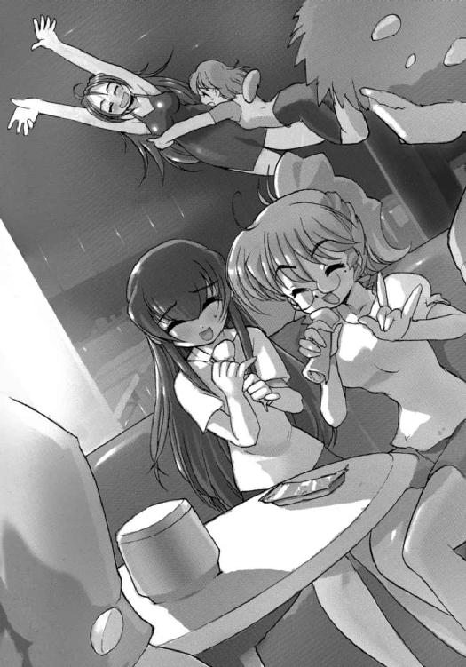
「やだ......」
シノンはあわててその涙をつかみとろうとする。
「どうした？」
機関長の榊原コウキがそれに気づいて、心配そうに声をかけてくる。
「な、なんでもありません」
シノンはあわてて首を横に振った。
しかし、まだ涙が止まっていなかったので、水滴がまた左右に散る。
「こういうのって平和でいいなって思ったら、なんか感傷的になっちゃって」
シノンは水滴のひとつひとつを指でつまんでゆく。
「香月......」
榊原コウキはテーブルに備えつけてあった紙ナプキンを差し出してくれた。
シノンは微笑みながら、素直にそれを受け取った。
その顔を機関長は不思議そうに見つめる。
「どうかしました？」
涙を拭いながら、シノンは機関長に訊ねかえす。
「いや、同じ笑顔でも違うものだな、と思ったから」
機関長はそう言うと、自分の言葉に照れたように頭をかいた。
「同じ笑顔って......」
どういう意味なのかと、シノンは首をかしげる。
「正直言って、スターシップ・チャンネルはあまり見ないんだが、このまえ対消滅機関が暴走したとき、励ましてもらったじゃないか......」
そうコウキに言われて、シノンはハッとなる。
「ご、ごめんなさい」
そして、シノンは思わず頭を下げた。
「わたし、感情をこめるのがうまくなくて、撮影のときとか任務のときとか、よく作り笑いするんです。営業用の笑顔って自覚してるんですけど......」
「いや、あのときも、オレはホントに嬉しかったんだ」
コウキは顔を伏せながら、ボソボソと言った。
「だけど、今の笑顔のほうが、なんというか、もっと魅力的だなと......」
そう言うと、機関長は手にしていたボトルの飲み口をくわえて、一気に吸いこんだ。
それが気管に入ったらしく激しく咳きこむ。
「ありがとうございます」
不器用な言葉だったが、それがかえって、シノンには嬉しかった。彼女のほうこそ、励まされた気がした。
「どっちのシノンもシノンなんだけど......」
ミユリが嬉しそうな顔をして、シノンにもたれかかってゆく。
「あたしは、あたしと一緒のときのシノンのほうが好きだな。あたしだけ、それを独占しているのって、みんなに悪い気がするの。シノンはもっと自分をだしていいと思うよ」
「そうなのかな......」
お酒の入ったボトルを両手で抱えたまま、シノンはポツリと言った。
「そうなの」
ミユリはきっぱりと言った。
（そうよね......。こういうほうが普通なんだものね。今は戦争のことなんか、考えちゃダメよね）
それから、スターシップ・チャンネルのことも、とシノンは自分に言い聞かせる。
「明日は番組の収録もないことだし、エクササイズも、レッスンもさぼる。カロリー制限もしない。とにかく徹底的に飲んで騒ぐ」
シノンはそう言うと、手にしていたボトルを高く掲げる。
そしてシノンは宣言どおりに実行したのである──
８
アマテラスの通路は照明がすべて落とされ、ほとんど真っ暗だった。
通路や天井、それから移動用手摺に組みこまれた非常用の発光マーカーが、やけに明るく見える。
そのマーカーを頼りに、香月シノンはふらふらと自室へと向かっていた。
隣には機関長、榊原コウキの姿がある。
五時間以上におよぶ大騒ぎが終わったのは、ほんの一〇分ほど前。
秋里ミユリが星を見たいと言いだして、真田トキヤを〝南十字〟のある光学観測室へと連れだしたのだ。
里見レンナと摩耶アキホのふたりも、ムービーのマラソンをすると宣言し、藤岡ミツヤと加藤ヒデのふたりを強引に誘い、マルチモニターの最前列を占領した。
シノンは飲み疲れて眠気を覚えていたので、迷惑をかけてはと思い、自分の部屋に帰ることにした。
コウキはそんな彼女を気遣って、送ってくれたのだ。
「今日は楽しかった......」
シノンはそう言うと、ゆっくりと伸びをした。
大きく伸びをすると、粘着靴が床から離れて、天井にぶつかってしまう。普段なら移動用手摺につかまって移動するのだが、今はその動力も止まっている。
「ああ、楽しかったな......」
コウキの落ち着いた声が、ふたりだけしかいない通路に響いた。
「真田と秋里に感謝しないといけないな」
「感謝って？ どうして？」
シノンはコウキに訊ねかえす。
「ミユリが真田さんと仲よかったから、わたしたち合流したんでしょ。なんか、いろいろあてられたし......」
ふたりが今、人気のない光学観測室でなにをしているかと想像すると、シノンの顔は熱くなる。
「真田は大学二年のとき秋里に交際を申し込んで、断られたそうだ。それからは友達としてつきあっているだけらしい」
「そ、そうなんですか？」
シノンは驚きの声をあげた。脳裏に浮かびかけていた想像を、あわてて追いだす。
「たしかにミユリって、そういうところあるから......」
シノンはそう言って、苦笑を洩らした。
「自分のことを好きになってくれた人は、大切にしたいみたい。わたしは、なんか残酷って気がするんだけど......」
「真田もそれで納得しているんだから、問題ないんだろ」
「そうだけど、ミユリってストーカーみたいな相手にまで優しい言葉をかけるから......」
実際、防衛大学の三年のとき、そういう事件があったのだ。
ミユリのメールボックスに、彼女がコスプレしている合成映像が次々と送りつけられてきたのである。その送り主を捕まえたとき、シノンはギタギタに懲らしめようとしたのだが、ミユリはなぜか犯人をかばい、優しい言葉でたしなめただけだった。
それで相手は行為をやめたからよかったのだが、ミユリの態度を誤解して、もっと悪質な行動に出ていた可能性もある。
「ま、香月にストーカーかけるような男はいないだろうな」
コウキが笑い声を響かせる。
「どうせ、わたしはミユリみたいにもてませんから」
シノンはすねたように言った。
「そうじゃない......」
コウキはあわてたように釈明をはじめた。
「香月に興味をもっていた男は大勢いたんだ。でも、なんというか、近寄りがたい雰囲気があったから、誰も声をかけられなかったんだと思う......」
コウキはそう言ったあと、シノンの肩にためらないがら手をかけてきた。
シノンはぼんやりとコウキを振り返るが、通路は暗く、その表情はほとんどわからない。
「オレも、そのひとりだったから、わかるんだ。秋里と真田はオレの気持ちを知っていたから......」
「榊原......機関長？」
シノンにとって、思いもかけない言葉だった。
どう答えたらいいかわからず、シノンは呆然とコウキを見つめる。
「い、いや、オレが勝手に憧れていただけだから、気にしないでくれ。こういう機会でもなかったら、言いだせなかったと思うし......」
コウキはそう言うと、後悔したように短く刈った髪をかきむしった。
そんな機関長の姿に、シノンはまるでドラマでも見ているような気分になる。まるで、自分のことという気がしない。
（こういうときには、どう答えたらいんだろ？）
シノンはそう自問してみる。と、そのとき、ミユリの怒った顔が脳裏に浮かんで、ぶるぶると首を横に振った。
そして、
（わたしの気持ちは、どうなんだろ？）
と、問いかけなおす。
榊原機関長は、シノンに興味をもっていた、憧れていたと言ってくれたのだ。
（嫌な気はしない。ううん、ちょっと嬉しい）
シノンは自分の気持ちを確かめてみて、そう答えをだした。
ただ、機関長のことを、そういう気持ちで見たことはない。
シノンはまだ髪をかきむしって身悶えしているコウキをそっと見つめた。
与えられた役割を実直にこなす人物だということは、アマテラスで一緒に戦ってきて、彼女も知っている。
だが、防衛大学時代の印象は、ほとんどない。
講義や実技で同じクラスになったことも数えるほどしかない。言葉をかわしたことも、あったかどうか。もしも、防衛大学時代に交際を申し込まれていたら、間違いなく断っていただろう。
シノンは卒業しても自衛隊に入る気がなかったから、同期生たちに対して後ろめたい気持ちがあったのだ。それで、みんなとは距離を置いていた。
コウキが近寄りがたい雰囲気があったと言うのも当然である。
（たとえば、この人と身を寄せ合ったら、気持ちが安らぐのかな）
シノンはふとそんな思いにかられた。
間宮リオが神崎キスカとそうしているように。
通路は暗く、非常用の発光マーカーは幻想的な雰囲気をかもしだしていた。そして、彼女の部屋は、ほんの数メートル先にある。
シノンもいつになく酔っていて、気持ちは高まっている。
（このまま、この人を部屋に招き入れたら......）
そんな思いさえ、脳裏をよぎる。
ミユリとレンナは、早く父親離れしろ、と口をそろえる。
シノンとて、いつまでも父親に甘えていられないことはわかっている。だから、星間企業に就職し、惑星国家キビから出るつもりだったのだ。そして相手を見つけて、安定した家庭を築く。
（この人と結婚します、とか言ったら、お父ちゃんはどんな顔をするんだろう？）
たぶん、いつもの優しい笑顔を浮かべて、祝福してくれるに違いない。誰を連れて帰ろうと、あの人はきっと態度を変えない。
シノンはしかし、父のそういうところが大嫌いだった。
娘を不幸にしそうな男だと思ったら、殴りかかるぐらいのことはしてほしい、と思う。それが、普通の父親というものではないか。
（格好良くて、頭も良くて、なんだってできるのに、誰とも、何とも戦おうとしないのだから......）
誰からも尊敬される父でいてほしかった。自慢できる父でいてほしかった。
「す、すまなかった。わ、忘れてくれ」
苦しそうな声で、コウキが呼びかけてきた。
自分の世界に入ってしまったシノンを、気分を害したと誤解したのだろう。
「そんなこと言ったら、普通の女の子は怒ると思いますよ。言葉にしたんだから、本気のところを見せてくれないと......」
シノンは忍び笑いを洩らした。
「そ、そうなのか？ こういうことは、初めてだから......」
「他大学の女子と合コンぐらいしているでしょ？ 宇宙兵科の男子は、ものすごくもてるって聞いてますよ」
惑星国家キビでは最高の学歴で、将来は特別国家公務員の幹部になることが決まっている。キビの女性のあいだでは、結婚相手として一番人気なのだ。
残念ながら女子のほうは、高学歴がむしろネックとなって婚期は遅くなる傾向にある。
「相手のほうが積極的だと、なんか気持ちがひけるんだ。オレじゃなくて、オレの学歴や将来性だけを見られている気がして......」
「機関長って、ホント不器用なんですね。学歴も将来性も、あなたの実力なんですから、気にすることなんてありませんよ」
シノンはしかし、そういう不器用さは嫌いではない。
なにしろ、こういう状況だ。シノンだって、その気になりかけていたぐらいである。遊び慣れた男だったら、もっと気の利いた言葉をかけてきたことだろう。
そしたら、シノンも思い切っていたかもしれない。
（でも、きっと後悔していた......）
シノンには、そう確信できた。勢いにまかせなくてよかった、と心の底から思う。
自分も、そしてこの不器用な同期生も傷つけずにすんだ。
「機関長の言葉、わたし、忘れません。好意をもってもらったこと、嬉しく思います」
シノンはそう言うと、ゆっくりとコウキに顔を近づけていった。
そしてかるく唇を重ねる。
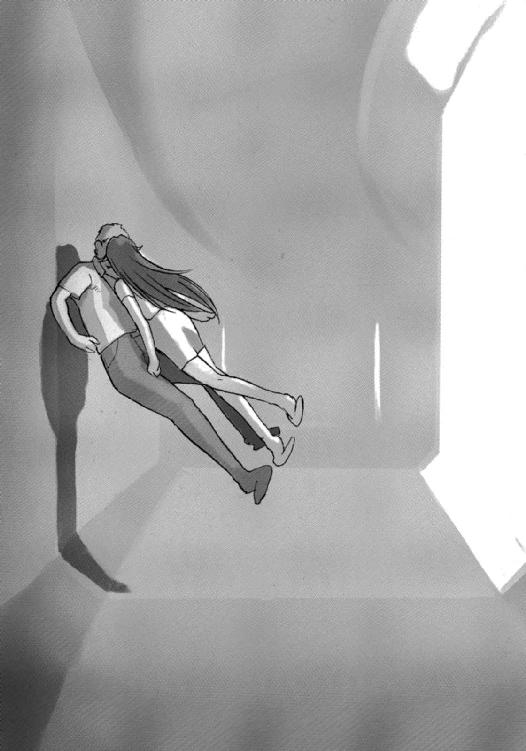
コウキはなにが起こったのかもわからないほど驚いた様子だった。
硬直したまま、身動きひとつしない。
「わたしも器用じゃないから、この戦いが終わるまで、他のことは考えられないみたいです」
「香月......」
「がんばって、この戦い、終わらせてしまいましょう。そのあとで、もう一度、誘ってください。今日みたいに他人まかせじゃなく、機関長が、ですよ」
「わかった......」
コウキは静かにうなずいた。
「そのときを、楽しみにしておくよ」
「わたしも、です」
シノンは笑顔でうなずくと、小さく手を横に振った。
「送っていただいて、ありがとうございました」
シノンは身体を折り曲げるように挨拶をすると、コウキに背を向ける。
そして、自分の部屋に入った。
急いで寝支度をすませ、寝袋同然のベッドに入りこんでから、シノンは自分の唇に指を当ててみる。
テキーラの香りの残るちょっとざらざらとしたコウキの唇の感触が、まだ確かめられた。
「そういえば、お父ちゃん以外の男の人とキスをするのって、これが初めてだったんだ......」
今頃になって、心臓がどきどきするのをシノンは覚えた。
「でも、いいよね」
そうつぶやいたあと、シノンは自分の言葉にそっと相槌を打った。
ＡＧＩの輸送船が到着するまでの三カ月は、自由護衛艦アマテラスとその乗員にとって、貧しくはあったが、もっとも平和な期間となった。
輸送船の補給を受け、ヘンリエッタ星域にもどったアマテラスには、これまで以上の激戦が待ち受けていたからである──
あとがき
二〇〇三年四月一〇日神戸──
ちょうど一年ぶりの刊行となります。たいへん長らく、お待たせいたしました。『スターシップ・オペレーターズ』第４巻、謹んでお届けします。
最近のライトノベルは、まるで雑誌みたくどんどん刊を重ねるというのがトレンドのようですが、僕にははっきりいって無理です。
いくつものシリーズを抱えているし、しかも原稿を書く速度が遅い。昨年は新刊８冊を目標にしたのですが、結果は４冊だけ。担当編集をはじめ関係者に謝りまくりながら、今は積み残した仕事を片づけています。それだけで、二〇〇三年も半分ぐらいはつぶれそう。
まったく情けないかぎりです。こうして作家稼業を続けていられるのは、忍耐強い読者の皆様のご支持があってのこと。本当にありがたく思っております。
この巻で『スタオペ』は第一部終了となります。もっとも、第二部の執筆はすでに始めていますので、またお待たせするとは思いますが、いつかはかならずお届けいたします。どうか、気長におつきあいください。
このシリーズは湾岸戦争のとき、ＣＮＮが放送する戦争映像を、それこそＴＶにかじりつくように見た体験が、アイデアのひとつになっています。ご存知のように、湾岸地域を舞台にした戦争が、ふたたびはじまってしまいました。
世界各局の戦争報道をふたたびＴＶにかじりつくように見ながら、戦争はいかんよなあ、とつくづく思います。ただ戦争のことをほとんど知らないで、ただ反戦を唱えるだけというのも、なんだかなぁという気がします。
僕には戦争をはじめることはできないし（幸いなことに）、止めることもできません（残念ながら）。ただ戦争をテーマに、これからも小説を書きつづけるとは思います。
もうひとつの残念な出来事は、スペースシャトル『コロンビア』の事故です。予算の削減によるシャトルの老朽化が、事故原因のひとつであるとの指摘もあり、戦争をするお金があるぐらいなら、宇宙開発に予算を回してほしいものだと思います。
宇宙などにお金をかける必要などないという指摘もありますが、巨大隕石が地球に衝突する確率は常にゼロではなく、直径二キロの隕石が落下したら、人類は絶滅するとの研究もあります。また、宇宙開発から新しい技術や産業が生まれてくる可能性だってあります。
二三〇〇年に、このシリーズのような未来社会が（戦争は抜きにして）実現していることを、僕は祈ってやみません。
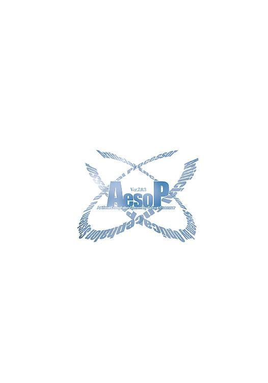
水野 良
１９６３年、大阪に生まれる。大学在住中にＲＰＧに熱中し、ゲームデザインを中心とした活動を開始。『ロードス島戦記』『クリスタニア』などファンタジー小説の旗手として多数の作品を発表する。高校時代はＳＦ同人誌に参加しており、長年のＳＦのファンでもある。

内藤 隆
キャラクターデザイン、イラスト担当。１９７５年、長野県に生まれる。２０００年初頭に小社刊『コミック電撃大王』で漫画家としてデビュー。現在、同誌にて「スターシップ・オペレーターズ」のコミックを連載している。イラストは、本作がデビュー作。
山根公利
メカニカルデザイナー。１９６６年、島根県に生まれる。代表的な参加作品『バブルガムクライシスシリーズ』『ガルフォースシリーズ』にはじまり、『機動戦士ガンダム第08ＭＳ小隊』『カウボーイビバップ』『無限のリヴァイアス』など多数。アニメーションメカデザイナーの第一人者である。
 電撃文庫
電撃文庫
スターシップ・オペレーターズ④
水野良
発 行 2013年12月27日
発行者 塚田正晃
発行所 株式会社KADOKAWA
〒102-8177 東京都千代田区富士見2-13-3
03-3238-8745（営業）
http://www.kadokawa.co.jp/
プロデュース アスキー・メディアワークス
〒102-8584 東京都千代田区富士見1-8-19
03-5216-8399（編集）
http://dengekibunko.dengeki.com/
本書（電子版）に掲載されているコンテンツ（ソフトウェア／プログラム／データ／情報を含む）の著作権およびその他の権利は、すべて株式会社KADOKAWAおよび正当な権利を有する第三者に帰属しています。
法律の定めがある場合または権利者の明示的な承諾がある場合を除き、これらのコンテンツを複製・転載、改変・編集、翻案・翻訳、放送・出版、公衆送信（送信可能化を含む）・再配信、販売・頒布、貸与等に使用することはできません。
(C)2003 水野 良
※この電子書籍は2005年2月10日発行の電撃文庫『スターシップ・オペレーターズ④』4版に基づき制作